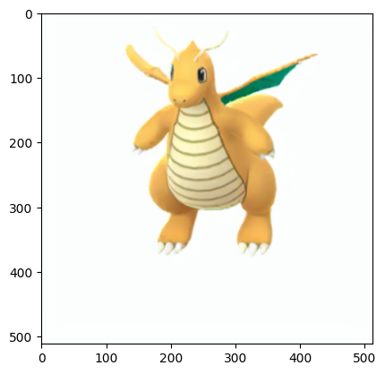
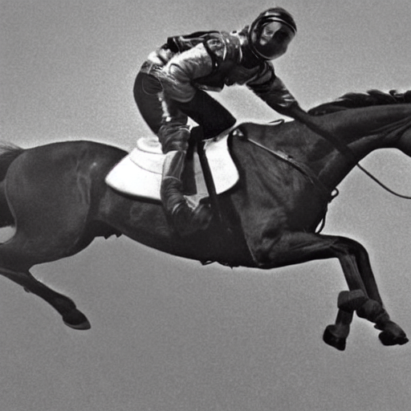

12 Representation learning
|
|

|
12.1 Setup
# Python ≥3.7 is recommended
import sys
assert sys.version_info >= (3, 7)
# Scikit-Learn ≥1.01 is recommended
from packaging import version
import sklearn
assert version.parse(sklearn.__version__) >= version.parse("1.0.1")
# Tensorflow ≥2.8.0 is recommended
import tensorflow as tf
assert version.parse(tf.__version__) >= version.parse("2.8.0")
# Difussion model
import keras_cv
import torch
from torch import autocast
from tqdm.auto import tqdm
from torchinfo import summary
from torchvision import transforms as tfms
from diffusers import StableDiffusionPipeline
from transformers import CLIPTextModel, CLIPTokenizer
from diffusers import AutoencoderKL, UNet2DConditionModel
from diffusers import LMSDiscreteScheduler, PNDMScheduler
# Image related
from PIL import Image
from skimage.io import imread, imshow, show
from skimage.color import rgba2rgb
from skimage.transform import resize
# Common imports
from sklearn.decomposition import PCA
from openTSNE import TSNE
import requests
import shutil
import numpy as np
import os
from pathlib import Path
import time
# To plot pretty figures
import matplotlib.pyplot as plt
import matplotlib
import matplotlib as mpl
from mpl_toolkits.mplot3d import Axes3D
plt.rc('font', size=14)
plt.rc('axes', labelsize=14, titlesize=14)
plt.rc('legend', fontsize=14)
plt.rc('xtick', labelsize=10)
plt.rc('ytick', labelsize=10)
# to make this notebook's output stable across runs
np.random.seed(42)
tf.random.set_seed(42) # extra code – ensures reproducibility on CPU if not tf.config.list_physical_devices('GPU'):
print("No GPU was detected. Neural nets can be very slow without a GPU.")
if "google.colab" in sys.modules:
print("Go to Runtime > Change runtime and select a GPU hardware "
"accelerator.")
if "kaggle_secrets" in sys.modules:
print("Go to Settings > Accelerator and select GPU.")A couple utility functions to plot grayscale \(28 \times 28\) image:
# Visualize 2d manifold from encodings using tSNE
def plot_embeddings_tsne(X_data, y_data, encodings):
np.random.seed(42)
tsne = TSNE(negative_gradient_method="fft")
X_data_2D = tsne.fit(encodings)
X_data_2D = (X_data_2D - X_data_2D.min()) / (X_data_2D.max() - X_data_2D.min())
# adapted from https://scikit-learn.org/stable/auto_examples/manifold/plot_lle_digits.html
plt.figure(figsize=(10, 8))
cmap = plt.cm.tab10
plt.scatter(X_data_2D[:, 0], X_data_2D[:, 1], c=y_data, s=10, cmap=cmap)
image_positions = np.array([[1., 1.]])
for index, position in enumerate(X_data_2D):
dist = np.sum((position - image_positions) ** 2, axis=1)
if np.min(dist) > 0.02: # if far enough from other images
image_positions = np.r_[image_positions, [position]]
imagebox = matplotlib.offsetbox.AnnotationBbox(
matplotlib.offsetbox.OffsetImage(X_data[index], cmap="binary"),
position, bboxprops={"edgecolor": cmap(y_data[index]), "lw": 2})
plt.gca().add_artist(imagebox)
plt.axis("off");
def plot_reconstructions(model, images, n_images=5):
reconstructions = np.clip(model.predict(images[:n_images]), 0, 1)
fig = plt.figure(figsize=(n_images * 1.5, 3))
for image_index in range(n_images):
plt.subplot(2, n_images, 1 + image_index)
plt.imshow(images[image_index], cmap="binary")
plt.axis("off")
plt.subplot(2, n_images, 1 + n_images + image_index)
plt.imshow(reconstructions[image_index], cmap="binary")
plt.axis("off")
def plot_multiple_images(images, n_cols=None):
n_cols = n_cols or len(images)
n_rows = (len(images) - 1) // n_cols + 1
if images.shape[-1] == 1:
images = images.squeeze(axis=-1)
plt.figure(figsize=(n_cols, n_rows))
for index, image in enumerate(images):
plt.subplot(n_rows, n_cols, index + 1)
plt.imshow(image, cmap="binary")
plt.axis("off")
def plot_images(images):
plt.figure(figsize=(20, 20))
for i in range(len(images)):
ax = plt.subplot(1, len(images), i + 1)
plt.imshow(images[i])
plt.axis("off")
# To visualize statistics of the hidden units adapted from https://github.com/probml/pyprobml/blob/master/notebooks/book1/20/ae_mnist_tf.ipynb
def plot_percent_hist(ax, data, bins):
counts, _ = np.histogram(data, bins=bins)
widths = bins[1:] - bins[:-1]
x = bins[:-1] + widths / 2
ax.bar(x, counts / len(data), width=widths*0.8)
ax.xaxis.set_ticks(bins)
ax.yaxis.set_major_formatter(mpl.ticker.FuncFormatter(
lambda y, position: "{}%".format(int(np.round(100 * y)))))
ax.grid(True)
def plot_activations_histogram2(encoder, height=1, n_bins=10):
X_valid_codings = encoder(X_valid).numpy()
activation_means = X_valid_codings.mean(axis=0)
mean = activation_means.mean()
bins = np.linspace(0, 1, n_bins + 1)
fig, ax1 = plt.subplots()
plot_percent_hist(ax1, X_valid_codings.ravel(), bins)
ax1.plot([mean, mean], [0, height], "k--", label="Overall Mean = {:.2f}".format(mean))
ax1.legend(loc="upper center", fontsize=14)
ax1.set_xlabel("Activation")
ax1.set_ylabel("% Activations")
ax1.axis([0, 1, 0, height])
plt.show()
fig, ax2 = plt.subplots()
plot_percent_hist(ax2, activation_means, bins)
ax2.plot([mean, mean], [0, height], "k--", label="Overall Mean = {:.2f}".format(mean))
ax2.set_xlabel("Neuron Mean Activation")
ax2.set_ylabel("% Neurons")
ax2.axis([0, 1, 0, height])
plt.show()
def plot_activations_heatmap(encoder, N=100):
X = encoder(X_valid).numpy()
plt.figure(figsize=(10,5))
plt.imshow(X[:N,:])
plt.colorbar()
# Set device
torch_device = "cuda" if torch.cuda.is_available() else "cpu"
def pil_to_latent(input_im):
# Single image -> single latent in a batch (so size 1, 4, 64, 64)
with torch.no_grad():
latent = vae.encode(tfms.ToTensor()(input_im).unsqueeze(0).to(torch_device)*2-1) # Note scaling
return 0.18215 * latent.latent_dist.sample()
def latents_to_pil(latents):
# bath of latents -> list of images
latents = (1 / 0.18215) * latents
with torch.no_grad():
image = vae.decode(latents).sample
image = (image / 2 + 0.5).clamp(0, 1)
image = image.detach().cpu().permute(0, 2, 3, 1).numpy()
images = (image * 255).round().astype("uint8")
pil_images = [Image.fromarray(image) for image in images]
return pil_images
def download_from_pokemondb(input_url, out_file):
r = requests.get(input_url, stream=True)
if r.status_code == 200:
with open(out_file, 'wb') as f:
r.raw.decode_content = True
shutil.copyfileobj(r.raw, f)12.2 Autoencoder
12.2.1 PCA with a linear Autoencoder
If the autoencoder uses only linear activations and the cost function is the mean squared error (MSE), then it ends up performing Principal Component Analysis. The following code builds a simple linear autoencoder to perform PCA on a 3D dataset, projecting it to 2D
np.random.seed(42)
def generate_3d_data(m, w1=0.1, w2=0.3, noise=0.1):
angles = np.random.rand(m) * 3 * np.pi / 2 - 0.5
data = np.empty((m, 3))
data[:, 0] = np.cos(angles) + np.sin(angles)/2 + noise * np.random.randn(m) / 2
data[:, 1] = np.sin(angles) * 0.7 + noise * np.random.randn(m) / 2
data[:, 2] = data[:, 0] * w1 + data[:, 1] * w2 + noise * np.random.randn(m)
return data
X_train = generate_3d_data(60)
X_train = X_train - X_train.mean(axis=0, keepdims=0)fig = plt.figure(figsize=(6, 3.8))
ax = fig.add_subplot(111, projection='3d')
ax.plot(X_train[:, 0], X_train[:, 1], X_train[:, 2], "k.")
ax.set_xlabel("$x_1$", fontsize=18, labelpad=10)
ax.set_ylabel("$x_2$", fontsize=18, labelpad=10)
ax.set_zlabel("$x_3$", fontsize=18, labelpad=10);Text(0.5, 0, '$x_3$')If the autoencoder uses only linear activations and the cost function is the mean squared error (MSE), then it ends up performing principal component analysis:
tf.keras.backend.clear_session()
tf.random.set_seed(42) # extra code – ensures reproducibility on CPU
encoder = tf.keras.Sequential([tf.keras.layers.Dense(2)])
decoder = tf.keras.Sequential([tf.keras.layers.Dense(3)])
autoencoder = tf.keras.Sequential([encoder, decoder])
optimizer = tf.keras.optimizers.SGD(learning_rate=1)
autoencoder.compile(loss="mse", optimizer=optimizer)history = autoencoder.fit(X_train, X_train, epochs=500, verbose=False)
codings = encoder.predict(X_train)2/2 [==============================] - 0s 6ms/stepfig = plt.figure(figsize=(4,3))
plt.plot(codings[:,0], codings[:, 1], "b.")
plt.xlabel("$z_1$", fontsize=18)
plt.ylabel("$z_2$", fontsize=18, rotation=0)
plt.grid(True);As you can see, the autoencoder found the best 2D plane to project the data onto, preserving as much variance in the data as it could (just like PCA). Note that we exchage the axis in this figure, since autoencoder will not order the data according to the eigenvalues.
12.2.2 Stacked Autoencoders
Let’s load the fashion MNIST dataset, scale it, and split it into a training set, a validation set, and a test set:
fashion_mnist = tf.keras.datasets.fashion_mnist.load_data()
(X_train_full, y_train_full), (X_test, y_test) = fashion_mnist
X_train_full = X_train_full.astype(np.float32) / 255
X_test = X_test.astype(np.float32) / 255
X_train, X_valid = X_train_full[:-5000], X_train_full[-5000:]
y_train, y_valid = y_train_full[:-5000], y_train_full[-5000:]Downloading data from https://storage.googleapis.com/tensorflow/tf-keras-datasets/train-labels-idx1-ubyte.gz
29515/29515 [==============================] - 0s 0us/step
Downloading data from https://storage.googleapis.com/tensorflow/tf-keras-datasets/train-images-idx3-ubyte.gz
26421880/26421880 [==============================] - 1s 0us/step
Downloading data from https://storage.googleapis.com/tensorflow/tf-keras-datasets/t10k-labels-idx1-ubyte.gz
5148/5148 [==============================] - 0s 0us/step
Downloading data from https://storage.googleapis.com/tensorflow/tf-keras-datasets/t10k-images-idx3-ubyte.gz
4422102/4422102 [==============================] - 1s 0us/step12.2.2.1 MLP Layer
You can implement a stacked autoencoder very much like a regular deep MLP. The following code builds a stacked autoencoder for Fashion MNIST. we split the autoencoder model into two submodels: the encoder and the decoder.
The encoder takes 28 × 28–pixel grayscale images, flattens them so that each image is represented as a vector of size 784, then processes these vectors through two
Denselayers of diminishing sizes (100 units then 30 units), both using theReLUactivation function. For each input image, the encoder outputs a vector of size 30.The decoder takes codings of size 30 (output by the encoder) and processes them through two Dense layers of increasing sizes (100 units then 784 units), and it reshapes the final vectors into 28 × 28 arrays so the decoder’s outputs have the same shape as the encoder’s inputs.
When compiling the stacked autoencoder, we use MSE loss and
Nadamoptimization.We train the model using
X_trainas both the inputs and the targets (and similarly, we useX_validas both the validation inputs and targets)
tf.keras.backend.clear_session()
tf.random.set_seed(42) # extra code – ensures reproducibility on CPU
stacked_encoder = tf.keras.Sequential([
tf.keras.layers.Flatten(),
tf.keras.layers.Dense(100, activation="relu"),
tf.keras.layers.Dense(30, activation="relu"),
])
stacked_decoder = tf.keras.Sequential([
tf.keras.layers.Dense(100, activation="relu"),
tf.keras.layers.Dense(28 * 28),
tf.keras.layers.Reshape([28, 28])
])
stacked_ae = tf.keras.Sequential([stacked_encoder, stacked_decoder])
stacked_ae.compile(loss="mse", optimizer="nadam")
history = stacked_ae.fit(X_train, X_train, epochs=20,
validation_data=(X_valid, X_valid))Epoch 1/20
1719/1719 [==============================] - 22s 9ms/step - loss: 0.0241 - val_loss: 0.0187
Epoch 2/20
1719/1719 [==============================] - 15s 9ms/step - loss: 0.0173 - val_loss: 0.0166
Epoch 3/20
1719/1719 [==============================] - 14s 8ms/step - loss: 0.0161 - val_loss: 0.0159
Epoch 4/20
1719/1719 [==============================] - 14s 8ms/step - loss: 0.0156 - val_loss: 0.0155
Epoch 5/20
1719/1719 [==============================] - 16s 9ms/step - loss: 0.0152 - val_loss: 0.0152
Epoch 6/20
1719/1719 [==============================] - 15s 9ms/step - loss: 0.0149 - val_loss: 0.0148
Epoch 7/20
1719/1719 [==============================] - 8s 5ms/step - loss: 0.0146 - val_loss: 0.0147
Epoch 8/20
1719/1719 [==============================] - 13s 8ms/step - loss: 0.0144 - val_loss: 0.0146
Epoch 9/20
1719/1719 [==============================] - 9s 5ms/step - loss: 0.0143 - val_loss: 0.0144
Epoch 10/20
1719/1719 [==============================] - 9s 5ms/step - loss: 0.0142 - val_loss: 0.0143
Epoch 11/20
1719/1719 [==============================] - 10s 6ms/step - loss: 0.0141 - val_loss: 0.0142
Epoch 12/20
1719/1719 [==============================] - 8s 5ms/step - loss: 0.0140 - val_loss: 0.0142
Epoch 13/20
1719/1719 [==============================] - 10s 6ms/step - loss: 0.0139 - val_loss: 0.0141
Epoch 14/20
1719/1719 [==============================] - 9s 5ms/step - loss: 0.0139 - val_loss: 0.0140
Epoch 15/20
1719/1719 [==============================] - 9s 5ms/step - loss: 0.0138 - val_loss: 0.0139
Epoch 16/20
1719/1719 [==============================] - 10s 6ms/step - loss: 0.0138 - val_loss: 0.0141
Epoch 17/20
1719/1719 [==============================] - 11s 6ms/step - loss: 0.0137 - val_loss: 0.0139
Epoch 18/20
1719/1719 [==============================] - 17s 10ms/step - loss: 0.0137 - val_loss: 0.0139
Epoch 19/20
1719/1719 [==============================] - 12s 7ms/step - loss: 0.0136 - val_loss: 0.0138
Epoch 20/20
1719/1719 [==============================] - 9s 5ms/step - loss: 0.0136 - val_loss: 0.013812.2.2.2 Visualizing the Reconstructions
One way to ensure that an autoencoder is properly trained is to compare the inputs and the outputs: the differences should not be too significant. Let’s plot a few images from the validation set, as well as their reconstructions:
The reconstructions are recognizable, but a bit too lossy. We may need to train the model for longer, or make the encoder and decoder deeper, or make the codings larger. But if we make the network too powerful, it will manage to make perfect reconstructions without having learned any useful patterns in the data. For now, let’s go with this model.
12.2.2.3 Visualizing Fashion MNIST
Now that we have trained a stacked autoencoder, we can use it to reduce the dataset’s dimensionality. For visualization, this does not give great results compared to other dimensionality reduction algorithms, but one big advantage of autoencoders is that they can handle large datasets, with many instances and many features. So one strategy is to use an autoencoder to reduce the dimensionality down to a reasonable level, then use another dimensionality reduction algorithm for visualization. Let’s use this strategy to visualize Fashion MNIST. First, we use the encoder from our stacked autoencoder to reduce the dimensionality down to 30, then we use Scikit-Learn’s implementation of the t-SNE algorithm to reduce the dimensionality down to 2 for visualization:
Z = stacked_encoder.predict(X_valid)
print(Z.shape)
plot_embeddings_tsne(X_valid, y_valid, Z)
plt.tight_layout();157/157 [==============================] - 0s 2ms/step
(5000, 30)
The t-SNE algorithm identified several clusters which match the classes reasonably well (each class is represented with a different color).
12.2.2.4 Using Convolutional Layers Instead of Dense Layers
If you are dealing with images, then the autoencoders we have seen so far will not work well (unless the images are very small): convolutional neural networks are far better suited than dense networks to work with images. So if you want to build an autoencoder for images, you will need to build a convolutional autoencoder. The encoder is a regular CNN composed of convolutional layers and pooling layers. It typically reduces the spatial dimensionality of the inputs (i.e., height and width) while increasing the depth (i.e., the number of feature maps). The decoder must do the reverse (upscale the image and reduce its depth back to the original dimensions), and for this you can use transpose convolutional layers (alternatively, you could combine upsampling layers with convolutional layers).
tf.keras.backend.clear_session()
tf.random.set_seed(42) # extra code – ensures reproducibility on CPU
conv_encoder = tf.keras.models.Sequential([
tf.keras.layers.Reshape([28, 28, 1], input_shape=[28, 28]),
tf.keras.layers.Conv2D(16, kernel_size=3, padding="SAME", activation="relu"),
tf.keras.layers.MaxPool2D(pool_size=2),
tf.keras.layers.Conv2D(32, kernel_size=3, padding="SAME", activation="relu"),
tf.keras.layers.MaxPool2D(pool_size=2),
tf.keras.layers.Conv2D(64, kernel_size=3, padding="SAME", activation="relu"),
tf.keras.layers.MaxPool2D(pool_size=2)
])
conv_decoder = tf.keras.models.Sequential([
tf.keras.layers.Conv2DTranspose(32, kernel_size=3, strides=2, padding="VALID", activation="relu",
input_shape=[3, 3, 64]),
tf.keras.layers.Conv2DTranspose(16, kernel_size=3, strides=2, padding="SAME", activation="relu"),
tf.keras.layers.Conv2DTranspose(1, kernel_size=3, strides=2, padding="SAME", activation="relu"),
tf.keras.layers.Reshape([28, 28])
])
conv_ae = tf.keras.Sequential([conv_encoder, conv_decoder])
conv_ae.compile(loss="mse", optimizer="nadam")
history = conv_ae.fit(X_train, X_train, epochs=10,
validation_data=(X_valid, X_valid))Epoch 1/10
1719/1719 [==============================] - 24s 8ms/step - loss: 0.0179 - val_loss: 0.0117
Epoch 2/10
1719/1719 [==============================] - 13s 8ms/step - loss: 0.0102 - val_loss: 0.0095
Epoch 3/10
1719/1719 [==============================] - 13s 8ms/step - loss: 0.0088 - val_loss: 0.0081
Epoch 4/10
1719/1719 [==============================] - 14s 8ms/step - loss: 0.0079 - val_loss: 0.0076
Epoch 5/10
1719/1719 [==============================] - 14s 8ms/step - loss: 0.0073 - val_loss: 0.0069
Epoch 6/10
1719/1719 [==============================] - 18s 10ms/step - loss: 0.0068 - val_loss: 0.0065
Epoch 7/10
1719/1719 [==============================] - 13s 8ms/step - loss: 0.0065 - val_loss: 0.0062
Epoch 8/10
1719/1719 [==============================] - 14s 8ms/step - loss: 0.0062 - val_loss: 0.0069
Epoch 9/10
1719/1719 [==============================] - 13s 8ms/step - loss: 0.0060 - val_loss: 0.0060
Epoch 10/10
1719/1719 [==============================] - 13s 8ms/step - loss: 0.0058 - val_loss: 0.00581/1 [==============================] - 0s 370ms/step12.2.3 Stacked denoising Autoencoder
Another way to force the autoencoder to learn useful features is to add noise to its inputs, training it to recover the original, noise-free inputs. The noise can be pure Gaussian noise added to the inputs, or it can be randomly switched-off inputs, just like in dropout (Bernoulli)
tf.keras.backend.clear_session()
tf.random.set_seed(42) # extra code – ensures reproducibility on CPU
# If you want, you can try replacing the Dropout layer with tf.keras.layers.GaussianNoise(0.2)
dropout_encoder = tf.keras.Sequential([
tf.keras.layers.Flatten(),
tf.keras.layers.Dropout(0.5),
tf.keras.layers.Dense(100, activation="relu"),
tf.keras.layers.Dense(30, activation="relu")
])
dropout_decoder = tf.keras.Sequential([
tf.keras.layers.Dense(100, activation="relu"),
tf.keras.layers.Dense(28 * 28),
tf.keras.layers.Reshape([28, 28])
])
dropout_ae = tf.keras.Sequential([dropout_encoder, dropout_decoder])
# extra code – compiles and fits the model
dropout_ae.compile(loss="mse", optimizer="nadam")
history = dropout_ae.fit(X_train, X_train, epochs=10,
validation_data=(X_valid, X_valid))Epoch 1/10
1719/1719 [==============================] - 12s 6ms/step - loss: 0.0287 - val_loss: 0.0214
Epoch 2/10
1719/1719 [==============================] - 8s 5ms/step - loss: 0.0220 - val_loss: 0.0196
Epoch 3/10
1719/1719 [==============================] - 10s 6ms/step - loss: 0.0208 - val_loss: 0.0187
Epoch 4/10
1719/1719 [==============================] - 9s 5ms/step - loss: 0.0201 - val_loss: 0.0183
Epoch 5/10
1719/1719 [==============================] - 9s 5ms/step - loss: 0.0196 - val_loss: 0.0179
Epoch 6/10
1719/1719 [==============================] - 10s 6ms/step - loss: 0.0194 - val_loss: 0.0178
Epoch 7/10
1719/1719 [==============================] - 9s 5ms/step - loss: 0.0191 - val_loss: 0.0176
Epoch 8/10
1719/1719 [==============================] - 10s 6ms/step - loss: 0.0190 - val_loss: 0.0174
Epoch 9/10
1719/1719 [==============================] - 9s 5ms/step - loss: 0.0188 - val_loss: 0.0173
Epoch 10/10
1719/1719 [==============================] - 10s 6ms/step - loss: 0.0187 - val_loss: 0.017012.2.4 Sparse Autoencoder
Another kind of constraint that often leads to good feature extraction is sparsity: by adding an appropriate term to the cost function, the autoencoder is pushed to reduce the number of active neurons in the coding layer. For example, it may be pushed to have on average only 5% significantly active neurons in the coding layer. This forces the autoencoder to represent each input as a combination of a small number of activations. As a result, each neuron in the coding layer typically ends up representing a useful feature.
tf.keras.backend.clear_session()
tf.random.set_seed(42) # extra code – ensures reproducibility on CPU
# Normal autoencoder
stacked_encoder = tf.keras.Sequential([
tf.keras.layers.Flatten(),
tf.keras.layers.Dense(100, activation="relu"),
tf.keras.layers.Dense(300, activation="relu"),
])
stacked_decoder = tf.keras.Sequential([
tf.keras.layers.Dense(100, activation="relu"),
tf.keras.layers.Dense(28 * 28),
tf.keras.layers.Reshape([28, 28])
])
stacked_ae = tf.keras.Sequential([stacked_encoder, stacked_decoder])
stacked_ae.compile(loss="mse", optimizer="nadam")
history = stacked_ae.fit(X_train, X_train, epochs=10,
validation_data=(X_valid, X_valid))Epoch 1/10
1719/1719 [==============================] - 12s 6ms/step - loss: 0.0207 - val_loss: 0.0142
Epoch 2/10
1719/1719 [==============================] - 8s 5ms/step - loss: 0.0128 - val_loss: 0.0121
Epoch 3/10
1719/1719 [==============================] - 9s 5ms/step - loss: 0.0114 - val_loss: 0.0117
Epoch 4/10
1719/1719 [==============================] - 8s 5ms/step - loss: 0.0107 - val_loss: 0.0109
Epoch 5/10
1719/1719 [==============================] - 9s 5ms/step - loss: 0.0104 - val_loss: 0.0101
Epoch 6/10
1719/1719 [==============================] - 9s 5ms/step - loss: 0.0103 - val_loss: 0.0102
Epoch 7/10
1719/1719 [==============================] - 8s 5ms/step - loss: 0.0103 - val_loss: 0.0102
Epoch 8/10
1719/1719 [==============================] - 9s 5ms/step - loss: 0.0102 - val_loss: 0.0104
Epoch 9/10
1719/1719 [==============================] - 9s 5ms/step - loss: 0.0102 - val_loss: 0.0102
Epoch 10/10
1719/1719 [==============================] - 9s 5ms/step - loss: 0.0101 - val_loss: 0.0104plot_reconstructions(stacked_ae, X_valid)
plot_activations_heatmap(stacked_encoder)
plot_activations_histogram2(stacked_encoder, height=0.35);1/1 [==============================] - 0s 287ms/step
Three figures show neuron activity (in the bottleneck layer) for an autoencoder applied to Fashion MNIST. Heatmap of 300 neuron activations (columns) across 100 examples (rows). Histogram of activation levels derived from this heatmap. Histogram of the mean activation per neuron, averaged over all examples in the validation set. You can see that some neurons fire almost all the time (right side of the histogram).
A simple approach is to use the sigmoid activation function in the coding layer (to constrain the codings to values between 0 and 1), use a large coding layer (e.g., with 300 units), and add some L1 regularization to the coding layer’s activations.
tf.keras.backend.clear_session()
tf.random.set_seed(42) # extra code – ensures reproducibility on CPU
sparse_l1_encoder = tf.keras.Sequential([
tf.keras.layers.Flatten(),
tf.keras.layers.Dense(100, activation="relu"),
tf.keras.layers.Dense(300, activation="sigmoid"),
tf.keras.layers.ActivityRegularization(l1=1e-4)
])
sparse_l1_decoder = tf.keras.Sequential([
tf.keras.layers.Dense(100, activation="relu"),
tf.keras.layers.Dense(28 * 28),
tf.keras.layers.Reshape([28, 28])
])
sparse_l1_ae = tf.keras.Sequential([sparse_l1_encoder, sparse_l1_decoder])
# extra code – compiles and fits the model
sparse_l1_ae.compile(loss="mse", optimizer="nadam")
history = sparse_l1_ae.fit(X_train, X_train, epochs=10,
validation_data=(X_valid, X_valid))Epoch 1/10
1719/1719 [==============================] - 17s 8ms/step - loss: 0.0275 - val_loss: 0.0191
Epoch 2/10
1719/1719 [==============================] - 12s 7ms/step - loss: 0.0170 - val_loss: 0.0160
Epoch 3/10
1719/1719 [==============================] - 9s 5ms/step - loss: 0.0148 - val_loss: 0.0146
Epoch 4/10
1719/1719 [==============================] - 10s 6ms/step - loss: 0.0137 - val_loss: 0.0133
Epoch 5/10
1719/1719 [==============================] - 9s 5ms/step - loss: 0.0129 - val_loss: 0.0128
Epoch 6/10
1719/1719 [==============================] - 10s 6ms/step - loss: 0.0124 - val_loss: 0.0122
Epoch 7/10
1719/1719 [==============================] - 10s 6ms/step - loss: 0.0119 - val_loss: 0.0118
Epoch 8/10
1719/1719 [==============================] - 8s 5ms/step - loss: 0.0116 - val_loss: 0.0115
Epoch 9/10
1719/1719 [==============================] - 10s 6ms/step - loss: 0.0113 - val_loss: 0.0113
Epoch 10/10
1719/1719 [==============================] - 9s 5ms/step - loss: 0.0111 - val_loss: 0.0110This ActivityRegularization layer just returns its inputs, but as a side effect it adds a training loss equal to the sum of the absolute values of its inputs. This only affects training. Equivalently, you could remove the ActivityRegularization layer and set activity_regularizer=tf.keras.regularizers.l1(1e-4) in the previous layer. This penalty will encourage the neural network to produce codings close to 0, but since it will also be penalized if it does not reconstruct the inputs correctly, it will have to output at least a few nonzero values. Using the L1 norm rather than the L2 norm will push the neural network to preserve the most important codings while eliminating the ones that are not needed for the input image (rather than just reducing all codings).
plot_reconstructions(sparse_l1_ae, X_valid)
plot_activations_heatmap(sparse_l1_encoder)
plot_activations_histogram2(sparse_l1_encoder);1/1 [==============================] - 0s 364ms/stepAnother approach, which often yields better results, is to measure the actual sparsity of the coding layer at each training iteration, and penalize the model when the measured sparsity differs from a target sparsity. We do so by computing the average activation of each neuron in the coding layer, over the whole training batch. Once we have the mean activation per neuron, we want to penalize the neurons that are too active, or not active enough, by adding a sparsity loss to the cost function.
Once we have computed the sparsity loss for each neuron in the coding layer, we sum up these losses and add the result to the cost function. In order to control the relative importance of the sparsity loss and the reconstruction loss, we can multiply the sparsity loss by a sparsity weight hyperparameter. If this weight is too high, the model will stick closely to the target sparsity, but it may not reconstruct the inputs properly, making the model useless. Conversely, if it is too low, the model will mostly ignore the sparsity objective and will not learn any interesting features.
We now have all we need to implement a sparse autoencoder based on the KL divergence. First, let’s create a custom regularizer to apply KL divergence regularization:
kl_divergence = tf.keras.losses.kullback_leibler_divergence
class KLDivergenceRegularizer(tf.keras.regularizers.Regularizer):
def __init__(self, weight, target):
self.weight = weight
self.target = target
def __call__(self, inputs):
mean_activities = tf.reduce_mean(inputs, axis=0)
return self.weight * (
kl_divergence(self.target, mean_activities) +
kl_divergence(1. - self.target, 1. - mean_activities))Now let’s use this regularizer to push the model to have about 10% sparsity in the coding layer:
tf.keras.backend.clear_session()
tf.random.set_seed(42) # extra code – ensures reproducibility on CPU
kld_reg = KLDivergenceRegularizer(weight=5e-3, target=0.1)
sparse_kl_encoder = tf.keras.Sequential([
tf.keras.layers.Flatten(),
tf.keras.layers.Dense(100, activation="relu"),
tf.keras.layers.Dense(300, activation="sigmoid",
activity_regularizer=kld_reg)
])
sparse_kl_decoder = tf.keras.Sequential([
tf.keras.layers.Dense(100, activation="relu"),
tf.keras.layers.Dense(28 * 28),
tf.keras.layers.Reshape([28, 28])
])
sparse_kl_ae = tf.keras.Sequential([sparse_kl_encoder, sparse_kl_decoder])
# extra code – compiles and fits the model
sparse_kl_ae.compile(loss="mse", optimizer="nadam")
history = sparse_kl_ae.fit(X_train, X_train, epochs=10,
validation_data=(X_valid, X_valid))Epoch 1/10
1719/1719 [==============================] - 20s 10ms/step - loss: 0.0258 - val_loss: 0.0172
Epoch 2/10
1719/1719 [==============================] - 14s 8ms/step - loss: 0.0149 - val_loss: 0.0134
Epoch 3/10
1719/1719 [==============================] - 12s 7ms/step - loss: 0.0125 - val_loss: 0.0143
Epoch 4/10
1719/1719 [==============================] - 11s 7ms/step - loss: 0.0112 - val_loss: 0.0108
Epoch 5/10
1719/1719 [==============================] - 10s 6ms/step - loss: 0.0105 - val_loss: 0.0102
Epoch 6/10
1719/1719 [==============================] - 11s 6ms/step - loss: 0.0100 - val_loss: 0.0098
Epoch 7/10
1719/1719 [==============================] - 11s 7ms/step - loss: 0.0097 - val_loss: 0.0096
Epoch 8/10
1719/1719 [==============================] - 10s 6ms/step - loss: 0.0095 - val_loss: 0.0099
Epoch 9/10
1719/1719 [==============================] - 11s 7ms/step - loss: 0.0094 - val_loss: 0.0094
Epoch 10/10
1719/1719 [==============================] - 11s 6ms/step - loss: 0.0092 - val_loss: 0.0092plot_reconstructions(sparse_kl_ae, X_valid)
plot_activations_heatmap(sparse_kl_encoder)
plot_activations_histogram2(sparse_kl_encoder);WARNING:tensorflow:5 out of the last 162 calls to <function Model.make_predict_function.<locals>.predict_function at 0x7f618ee73640> triggered tf.function retracing. Tracing is expensive and the excessive number of tracings could be due to (1) creating @tf.function repeatedly in a loop, (2) passing tensors with different shapes, (3) passing Python objects instead of tensors. For (1), please define your @tf.function outside of the loop. For (2), @tf.function has reduce_retracing=True option that can avoid unnecessary retracing. For (3), please refer to https://www.tensorflow.org/guide/function#controlling_retracing and https://www.tensorflow.org/api_docs/python/tf/function for more details.1/1 [==============================] - 0s 110ms/stepAfter training this sparse autoencoder on Fashion MNIST, the activations of the neurons in the coding layer are mostly close to 0 (about 70% of all activations are lower than 0.1), and all neurons have a mean activation around 0.1 (about 80% of all neurons have a mean activation between 0.1 and 0.2)
12.3 Variational Autoencoder
We’re going to be implementing a VAE that can generate MNIST digits. It’s going to have three parts:
- An encoder network that turns a real image into a mean and a variance in the latent space
- A sampling layer that takes such a mean and variance, and uses them to sample a random point from the latent space
- A decoder network that turns points from the latent space back into images
12.3.1 Latent-space-sampling layer
First, we will need a custom layer to sample the codings:
12.3.2 VAE implementation
12.3.2.1 VAE encoder
Next, we can create the encoder, using the functional API because the model is not entirely sequential:
tf.keras.backend.clear_session()
tf.random.set_seed(42) # extra code – ensures reproducibility on CPU
codings_size = 10
inputs = tf.keras.layers.Input(shape=[28, 28])
Z = tf.keras.layers.Flatten()(inputs)
Z = tf.keras.layers.Dense(150, activation="relu")(Z)
Z = tf.keras.layers.Dense(100, activation="relu")(Z)
codings_mean = tf.keras.layers.Dense(codings_size)(Z) # μ
codings_log_var = tf.keras.layers.Dense(codings_size)(Z) # γ
codings = Sampling()([codings_mean, codings_log_var])
variational_encoder = tf.keras.Model(
inputs=[inputs], outputs=[codings_mean, codings_log_var, codings])
variational_encoder.summary()Model: "model"
__________________________________________________________________________________________________
Layer (type) Output Shape Param # Connected to
==================================================================================================
input_1 (InputLayer) [(None, 28, 28)] 0 []
flatten (Flatten) (None, 784) 0 ['input_1[0][0]']
dense (Dense) (None, 150) 117750 ['flatten[0][0]']
dense_1 (Dense) (None, 100) 15100 ['dense[0][0]']
dense_2 (Dense) (None, 10) 1010 ['dense_1[0][0]']
dense_3 (Dense) (None, 10) 1010 ['dense_1[0][0]']
sampling (Sampling) (None, 10) 0 ['dense_2[0][0]',
'dense_3[0][0]']
==================================================================================================
Total params: 134,870
Trainable params: 134,870
Non-trainable params: 0
__________________________________________________________________________________________________Note that the Dense layers that output codings_mean (\(\mu\)) and codings_log_var (\(\gamma\)) have the same inputs (i.e., the outputs of the second Dense layer). We then pass both codings_mean and codings_log_var to the Sampling layer. Finally, the variational_encoder model has three outputs. Only the codings are required, but we add codings_mean and codings_log_var as well, in case we want to inspect their values.
12.3.2.2 VAE decoder
Now let’s build the decoder:
decoder_inputs = tf.keras.layers.Input(shape=[codings_size])
x = tf.keras.layers.Dense(100, activation="relu")(decoder_inputs)
x = tf.keras.layers.Dense(150, activation="relu")(x)
x = tf.keras.layers.Dense(28 * 28)(x)
outputs = tf.keras.layers.Reshape([28, 28])(x)
variational_decoder = tf.keras.Model(inputs=[decoder_inputs], outputs=[outputs])
variational_decoder.summary()Model: "model_1"
_________________________________________________________________
Layer (type) Output Shape Param #
=================================================================
input_2 (InputLayer) [(None, 10)] 0
dense_4 (Dense) (None, 100) 1100
dense_5 (Dense) (None, 150) 15150
dense_6 (Dense) (None, 784) 118384
reshape (Reshape) (None, 28, 28) 0
=================================================================
Total params: 134,634
Trainable params: 134,634
Non-trainable params: 0
_________________________________________________________________For this decoder, we could have used the sequential API instead of the functional API, since it is really just a simple stack of layers, virtually identical to many of the decoders we have built so far.
12.3.2.3 VAE model
Finally, let’s build the variational autoencoder model:
We ignore the first two outputs of the encoder (we only want to feed the codings to the decoder). Lastly, we must add the latent loss and the reconstruction loss:
latent_loss = -0.5 * tf.reduce_sum( 1 + codings_log_var - tf.exp(codings_log_var) - tf.square(codings_mean), axis=-1)
# Indeed, the variational autoencoder’s reconstruction loss is supposed to be
# the sum of the pixel reconstruction errors, but when Keras
# computes the "mse" loss it computes the mean over all 784 pixels, rather than the
# sum. So, the reconstruction loss is 784 times smaller than we need it to be.
variational_ae.add_loss(tf.reduce_mean(latent_loss) / 784.)variational_ae.compile(loss="mse", optimizer="nadam")
history = variational_ae.fit(X_train, X_train, epochs=25, batch_size=128,
validation_data=(X_valid, X_valid))Epoch 1/25
430/430 [==============================] - 7s 8ms/step - loss: 0.0507 - val_loss: 0.0384
Epoch 2/25
430/430 [==============================] - 5s 11ms/step - loss: 0.0365 - val_loss: 0.0357
Epoch 3/25
430/430 [==============================] - 7s 17ms/step - loss: 0.0347 - val_loss: 0.0345
Epoch 4/25
430/430 [==============================] - 4s 9ms/step - loss: 0.0338 - val_loss: 0.0338
Epoch 5/25
430/430 [==============================] - 4s 9ms/step - loss: 0.0332 - val_loss: 0.0333
Epoch 6/25
430/430 [==============================] - 4s 10ms/step - loss: 0.0328 - val_loss: 0.0330
Epoch 7/25
430/430 [==============================] - 4s 8ms/step - loss: 0.0325 - val_loss: 0.0330
Epoch 8/25
430/430 [==============================] - 5s 12ms/step - loss: 0.0323 - val_loss: 0.0327
Epoch 9/25
430/430 [==============================] - 4s 10ms/step - loss: 0.0320 - val_loss: 0.0325
Epoch 10/25
430/430 [==============================] - 4s 9ms/step - loss: 0.0319 - val_loss: 0.0320
Epoch 11/25
430/430 [==============================] - 4s 10ms/step - loss: 0.0317 - val_loss: 0.0320
Epoch 12/25
430/430 [==============================] - 3s 8ms/step - loss: 0.0315 - val_loss: 0.0317
Epoch 13/25
430/430 [==============================] - 4s 10ms/step - loss: 0.0315 - val_loss: 0.0316
Epoch 14/25
430/430 [==============================] - 4s 9ms/step - loss: 0.0313 - val_loss: 0.0315
Epoch 15/25
430/430 [==============================] - 3s 8ms/step - loss: 0.0313 - val_loss: 0.0318
Epoch 16/25
430/430 [==============================] - 3s 8ms/step - loss: 0.0312 - val_loss: 0.0315
Epoch 17/25
430/430 [==============================] - 7s 17ms/step - loss: 0.0312 - val_loss: 0.0314
Epoch 18/25
430/430 [==============================] - 5s 10ms/step - loss: 0.0311 - val_loss: 0.0314
Epoch 19/25
430/430 [==============================] - 5s 12ms/step - loss: 0.0310 - val_loss: 0.0313
Epoch 20/25
430/430 [==============================] - 5s 11ms/step - loss: 0.0310 - val_loss: 0.0313
Epoch 21/25
430/430 [==============================] - 4s 9ms/step - loss: 0.0309 - val_loss: 0.0311
Epoch 22/25
430/430 [==============================] - 3s 8ms/step - loss: 0.0309 - val_loss: 0.0312
Epoch 23/25
430/430 [==============================] - 3s 8ms/step - loss: 0.0308 - val_loss: 0.0312
Epoch 24/25
430/430 [==============================] - 4s 10ms/step - loss: 0.0308 - val_loss: 0.0311
Epoch 25/25
430/430 [==============================] - 4s 9ms/step - loss: 0.0308 - val_loss: 0.031012.3.3 Generating Fashion MNIST Images
Now let’s use this variational autoencoder to generate images that look like fashion items. All we need to do is sample random codings from a Gaussian distribution and decode them:
codings = tf.random.normal(shape=[3 * 7, codings_size])
images = variational_decoder(codings).numpy()
plot_multiple_images(images, 7);Variational autoencoders make it possible to perform semantic interpolation: instead of interpolating between two images at the pixel level, which would look as if the two images were just overlaid, we can interpolate at the codings level. For example, let’s take a few codings along an arbitrary line in latent space and decode them. We get a sequence of images that gradually go from sweaters to pants:
12.4 Generative Adversarial Networks
Let’s go ahead and build a simple GAN for Fashion MNIST. First, we need to build the generator and the discriminator. The generator is similar to an autoencoder’s decoder, and the discriminator is a regular binary classifier: it takes an image as input and ends with a Dense layer containing a single unit and using the sigmoid activation function. For the second phase of each training iteration, we also need the full GAN model containing the generator followed by the discriminator:
12.4.1 Simple DCGAN
tf.keras.backend.clear_session()
tf.random.set_seed(42) # extra code – ensures reproducibility on CPU
codings_size = 100
generator = tf.keras.Sequential([
tf.keras.layers.Dense(7 * 7 * 128),
tf.keras.layers.Reshape([7, 7, 128]),
tf.keras.layers.BatchNormalization(),
tf.keras.layers.Conv2DTranspose(64, kernel_size=5, strides=2,
padding="same", activation="relu"),
tf.keras.layers.BatchNormalization(),
tf.keras.layers.Conv2DTranspose(1, kernel_size=5, strides=2,
padding="same", activation="tanh"),
])
discriminator = tf.keras.Sequential([
tf.keras.layers.Conv2D(64, kernel_size=5, strides=2, padding="same",
activation=tf.keras.layers.LeakyReLU(0.2)),
tf.keras.layers.Dropout(0.4),
tf.keras.layers.Conv2D(128, kernel_size=5, strides=2, padding="same",
activation=tf.keras.layers.LeakyReLU(0.2)),
tf.keras.layers.Dropout(0.4),
tf.keras.layers.Flatten(),
tf.keras.layers.Dense(1, activation="sigmoid")
])
gan = tf.keras.Sequential([generator, discriminator])The generator takes codings of size 100, projects them to 6,272 dimensions (7 * 7 * 128), and reshapes the result to get a 7 × 7 × 128 tensor. This tensor is batch normalized and fed to a transposed convolutional layer with a stride of 2, which upsamples it from 7 × 7 to 14 × 14 and reduces its depth from 128 to 64. The result is batch normalized again and fed to another transposed convolutional layer with a stride of 2, which upsamples it from 14 × 14 to 28 × 28 and reduces the depth from 64 to 1. This layer uses the tanh activation function, so the outputs will range from -1 to 1. For this reason, before training the GAN, we need to rescale the training set to that same range. We also need to reshape it to add the channel dimension:
The discriminator looks much like a regular CNN for binary classification, except instead of using max pooling layers to downsample the image, we use strided convo lutions ( strides=2 ). Note that we use the leaky ReLU activation function. Overall, we respected the DCGAN guidelines, except we replaced the BatchNormalization layers in the discriminator with Dropout layers.
Next, we need to compile these models. As the discriminator is a binary classifier, we can naturally use the binary cross-entropy loss. The gan model is also a binary classifier, so it can use the binary cross-entropy loss as well. However, the generator will only be trained through the gan model, so we do not need to compile it at all. Importantly, the discriminator should not be trained during the second phase, so we make it non-trainable before compiling the gan model:
The
trainableattribute is taken into account byKerasonly when compiling a model, so after running this code, the discriminator is trainable if we call itsfit()method or itstrain_on_batch()method (which we will be using), while it is not trainable when we call these methods on the gan model.
Since the training loop is unusual, we cannot use the regular fit() method. Instead, we will write a custom training loop. For this, we first need to create a Dataset to iterate through the images:
def train_gan(gan, dataset, batch_size, codings_size, n_epochs):
generator, discriminator = gan.layers
for epoch in range(n_epochs):
print(f"Epoch {epoch + 1}/{n_epochs}") # extra code
for X_batch in dataset:
# phase 1 - training the discriminator
noise = tf.random.normal(shape=[batch_size, codings_size])
generated_images = generator(noise)
X_fake_and_real = tf.concat([generated_images, X_batch], axis=0)
y1 = tf.constant([[0.]] * batch_size + [[1.]] * batch_size)
discriminator.train_on_batch(X_fake_and_real, y1)
# phase 2 - training the generator
noise = tf.random.normal(shape=[batch_size, codings_size])
y2 = tf.constant([[1.]] * batch_size)
gan.train_on_batch(noise, y2)
# extra code — plot images during training
plot_multiple_images(generated_images.numpy(), 8)
plt.show()
plt.close()
train_gan(gan, dataset, batch_size, codings_size, n_epochs=50)As discussed earlier, you can see the two phases at each iteration:
In phase one we feed Gaussian noise to the generator to produce fake images, • and we complete this batch by concatenating an equal number of real images. The targets
y1are set to 0 for fake images and 1 for real images. Then we train the discriminator on this batch. Remember that the discriminator is trainable in this phase, but we are not touching the generator.In phase two, we feed the GAN some Gaussian noise. Its generator will start by producing fake images, then the discriminator will try to guess whether these images are fake or real. In this phase, we are trying to improve the generator, which means that we want the discriminator to fail: this is why the targets
y2are all set to 1, although the images are fake. In this phase, the discriminator is not trainable, so the only part of the gan model that will improve is the generator.
After training, you can randomly sample some codings from a Gaussian distribution, and feed them to the generator to produce new images:
noise = tf.random.normal(shape=[batch_size, codings_size])
generated_images = generator.predict(noise)
plot_multiple_images(generated_images, 8)1/1 [==============================] - 0s 142ms/stepSee stylegan if you are looking for state-of-the-art solutions.
12.5 Diffusion Models
Starting with an image from the dataset, at each time step \(t\), the diffusion process adds Gaussian noise with mean 0 and variance \(\beta_t\). The model is then trained to reverse that process. More specifically, given a noisy image produced by the forward process, and given the time \(t\), the model is trained to predict the total noise that was added to the original image, scaled to variance 1.
The DDPM paper increased \(\beta_t\) from \(\beta_1\) = 0.0001 to $_T = \(0.02 (\)T$ is the max step), but the Improved DDPM paper suggested using the following \(\cos^2(\ldots)\) schedule instead, which gradually decreases \(\bar{\alpha_t} = \prod_{i=0}^{t} \alpha_i\) from 1 to 0, where \(\alpha_t = 1 - \beta_t\):
def variance_schedule(T, s=0.008, max_beta=0.999):
t = np.arange(T + 1)
f = np.cos((t / T + s) / (1 + s) * np.pi / 2) ** 2
alpha = np.clip(f[1:] / f[:-1], 1 - max_beta, 1)
alpha = np.append(1, alpha).astype(np.float32) # add α₀ = 1
beta = 1 - alpha
alpha_cumprod = np.cumprod(alpha)
return alpha, alpha_cumprod, beta # αₜ , α̅ₜ , βₜ for t = 0 to T
np.random.seed(42) # for reproducibility
T = 4000
alpha, alpha_cumprod, beta = variance_schedule(T)In the DDPM paper, the authors used \(T = 1,000\), while in the Improved DDPM, they bumped this up to \(T = 4,000\), so we use this value. The variable alpha is a vector containing \(\alpha_0, \alpha_1, ..., \alpha_T\). The variable alpha_cumprod is a vector containing \(\bar{\alpha_0}, \bar{\alpha_1}, ..., \bar{\alpha_T}\).
plt.figure(figsize=(6, 3))
plt.plot(beta, "r--", label=r"$\beta_t$")
plt.plot(alpha_cumprod, "b", label=r"$\bar{\alpha}_t$")
plt.axis([0, T, 0, 1])
plt.grid(True)
plt.xlabel(r"t")
plt.legend();To train our model to reverse the diffusion process, we will need noisy images from different time steps of the forward process. For this, let’s create a prepare_batch() function that will take a batch of clean images from the dataset and prepare them:
def prepare_batch(X):
X = tf.cast(X[..., tf.newaxis], tf.float32) * 2 - 1 # scale from -1 to +1
X_shape = tf.shape(X)
t = tf.random.uniform([X_shape[0]], minval=1, maxval=T + 1, dtype=tf.int32)
alpha_cm = tf.gather(alpha_cumprod, t)
alpha_cm = tf.reshape(alpha_cm, [X_shape[0]] + [1] * (len(X_shape) - 1))
noise = tf.random.normal(X_shape)
return {
"X_noisy": alpha_cm ** 0.5 * X + (1 - alpha_cm) ** 0.5 * noise,
"time": t,
}, noiseLet’s go through this code: - For simplicity we will use Fashion MNIST, so the function must first add a channel axis. It will also help to scale the pixel values from -1 to 1, so it’s closer to the final Gaussian distribution with mean 0 and variance 1.
Next, the function creates
t, a vector containing a random time step for each image in the batch, between1andT. Then it usestf.gather()to get the value ofalpha_cumprodfor each of the time steps in the vectort. This gives us the vectoralpha_cm, containing one value of \(\bar{\alpha_t}\) for each image.The next line reshapes the
alpha_cmfrom[batch size]to[batch size, 1, 1, 1]. This is needed to ensurealpha_cmcan be broadcasted with the batchX. Then we generate some Gaussian noise with mean 0 and variance 1.Lastly, we use apply the diffusion process to the images. Note that
x ** 0.5is equal to the square root ofx. The function returns a tuple containing the inputs and the targets. The inputs are represented as a Pythondictcontaining the noisy images and the time steps used to generate them. The targets are the Gaussian noise used to generate each image.
Next, we’ll create a training dataset and a validation set that will apply the prepare_batch() function to every batch. As earlier, X_train and X_valid contain the Fashion MNIST images with pixel values ranging from 0 to 1:
def prepare_dataset(X, batch_size=32, shuffle=False):
ds = tf.data.Dataset.from_tensor_slices(X)
if shuffle:
ds = ds.shuffle(10_000)
return ds.batch(batch_size).map(prepare_batch).prefetch(1)
tf.random.set_seed(43) # ensures reproducibility on CPU
train_set = prepare_dataset(X_train, batch_size=32, shuffle=True)
valid_set = prepare_dataset(X_valid, batch_size=32)As a quick sanity check, let’s take a look at a few training samples, along with the corresponding noise to predict, and the original images (which we get by subtracting the appropriately scaled noise from the appropriately scaled noisy image):
# Just a quick sanity check
def subtract_noise(X_noisy, time, noise):
X_shape = tf.shape(X_noisy)
alpha_cm = tf.gather(alpha_cumprod, time)
alpha_cm = tf.reshape(alpha_cm, [X_shape[0]] + [1] * (len(X_shape) - 1))
return (X_noisy - (1 - alpha_cm) ** 0.5 * noise) / alpha_cm ** 0.5
X_dict, Y_noise = list(train_set.take(1))[0] # get the first batch
X_original = subtract_noise(X_dict["X_noisy"], X_dict["time"], Y_noise)
print("Original images")
plot_multiple_images(X_original[:8].numpy())
plt.show()
print("Time steps:", X_dict["time"].numpy()[:8])
print("Noisy images")
plot_multiple_images(X_dict["X_noisy"][:8].numpy())
plt.show()
print("Noise to predict")
plot_multiple_images(Y_noise[:8].numpy())Original imagesTime steps: [3405 312 3441 1991 2443 1657 3308 1151]
Noisy imagesNoise to predictNow we’re ready to build the diffusion model itself. It will need to process both images and times. We will encode the times using a sinusoidal encoding, as suggested in the DDPM paper, just like in the Attention is all you need paper. Given a vector of m integers representing time indices (integers), the layer returns an m × d matrix, where d is the chosen embedding size.
# Implements a custom time encoding layer
embed_size = 64
class TimeEncoding(tf.keras.layers.Layer):
def __init__(self, T, embed_size, dtype=tf.float32, **kwargs):
super().__init__(dtype=dtype, **kwargs)
assert embed_size % 2 == 0, "embed_size must be even"
p, i = np.meshgrid(np.arange(T + 1), 2 * np.arange(embed_size // 2))
t_emb = np.empty((T + 1, embed_size))
t_emb[:, ::2] = np.sin(p / 10_000 ** (i / embed_size)).T
t_emb[:, 1::2] = np.cos(p / 10_000 ** (i / embed_size)).T
self.time_encodings = tf.constant(t_emb.astype(self.dtype))
def call(self, inputs):
return tf.gather(self.time_encodings, inputs)Now let’s build the model. In the Improved DDPM paper, they use a UNet model. We’ll create a UNet-like model, that processes the image through Conv2D + BatchNormalization layers and skip connections, gradually downsampling the image (using MaxPooling layers with strides=2), then growing it back again (using Upsampling2D layers). Skip connections are also added across the downsampling part and the upsampling part. We also add the time encodings to the output of each block, after passing them through a Dense layer to resize them to the right dimension.
- Note: an image’s time encoding is added to every pixel in the image, along the last axis (channels). So the number of units in the
Conv2Dlayer must correspond to the embedding size, and we must reshape thetime_enctensor to add the width and height dimensions. - This UNet implementation was inspired by keras.io’s image segmentation example, as well as from the official diffusion models implementation. Compared to the first implementation, I added a few things, especially time encodings and skip connections across down/up parts. Compared to the second implementation, I removed a few things, especially the attention layers. It seemed like overkill for Fashion MNIST, but feel free to add them.
tf.keras.backend.clear_session()
tf.random.set_seed(42) # extra code – ensures reproducibility on CPU
def build_diffusion_model():
X_noisy = tf.keras.layers.Input(shape=[28, 28, 1], name="X_noisy")
time_input = tf.keras.layers.Input(shape=[], dtype=tf.int32, name="time")
time_enc = TimeEncoding(T, embed_size)(time_input)
dim = 16
Z = tf.keras.layers.ZeroPadding2D((3, 3))(X_noisy)
Z = tf.keras.layers.Conv2D(dim, 3)(Z)
Z = tf.keras.layers.BatchNormalization()(Z)
Z = tf.keras.layers.Activation("relu")(Z)
time = tf.keras.layers.Dense(dim)(time_enc) # adapt time encoding
Z = time[:, tf.newaxis, tf.newaxis, :] + Z # add time data to every pixel
skip = Z
cross_skips = [] # skip connections across the down & up parts of the UNet
for dim in (32, 64, 128):
Z = tf.keras.layers.Activation("relu")(Z)
Z = tf.keras.layers.SeparableConv2D(dim, 3, padding="same")(Z)
Z = tf.keras.layers.BatchNormalization()(Z)
Z = tf.keras.layers.Activation("relu")(Z)
Z = tf.keras.layers.SeparableConv2D(dim, 3, padding="same")(Z)
Z = tf.keras.layers.BatchNormalization()(Z)
cross_skips.append(Z)
Z = tf.keras.layers.MaxPooling2D(3, strides=2, padding="same")(Z)
skip_link = tf.keras.layers.Conv2D(dim, 1, strides=2,
padding="same")(skip)
Z = tf.keras.layers.add([Z, skip_link])
time = tf.keras.layers.Dense(dim)(time_enc)
Z = time[:, tf.newaxis, tf.newaxis, :] + Z
skip = Z
for dim in (64, 32, 16):
Z = tf.keras.layers.Activation("relu")(Z)
Z = tf.keras.layers.Conv2DTranspose(dim, 3, padding="same")(Z)
Z = tf.keras.layers.BatchNormalization()(Z)
Z = tf.keras.layers.Activation("relu")(Z)
Z = tf.keras.layers.Conv2DTranspose(dim, 3, padding="same")(Z)
Z = tf.keras.layers.BatchNormalization()(Z)
Z = tf.keras.layers.UpSampling2D(2)(Z)
skip_link = tf.keras.layers.UpSampling2D(2)(skip)
skip_link = tf.keras.layers.Conv2D(dim, 1, padding="same")(skip_link)
Z = tf.keras.layers.add([Z, skip_link])
time = tf.keras.layers.Dense(dim)(time_enc)
Z = time[:, tf.newaxis, tf.newaxis, :] + Z
Z = tf.keras.layers.concatenate([Z, cross_skips.pop()], axis=-1)
skip = Z
outputs = tf.keras.layers.Conv2D(1, 3, padding="same")(Z)[:, 2:-2, 2:-2]
return tf.keras.Model(inputs=[X_noisy, time_input], outputs=[outputs])model = build_diffusion_model()
model.compile(loss=tf.keras.losses.Huber(), optimizer="nadam")
model.summary()Model: "model"
__________________________________________________________________________________________________
Layer (type) Output Shape Param # Connected to
==================================================================================================
X_noisy (InputLayer) [(None, 28, 28, 1)] 0 []
time (InputLayer) [(None,)] 0 []
zero_padding2d (ZeroPadding2D) (None, 34, 34, 1) 0 ['X_noisy[0][0]']
time_encoding (TimeEncoding) (None, 64) 0 ['time[0][0]']
conv2d (Conv2D) (None, 32, 32, 16) 160 ['zero_padding2d[0][0]']
dense (Dense) (None, 16) 1040 ['time_encoding[0][0]']
batch_normalization (BatchNorm (None, 32, 32, 16) 64 ['conv2d[0][0]']
alization)
tf.__operators__.getitem (Slic (None, 1, 1, 16) 0 ['dense[0][0]']
ingOpLambda)
activation (Activation) (None, 32, 32, 16) 0 ['batch_normalization[0][0]']
tf.__operators__.add (TFOpLamb (None, 32, 32, 16) 0 ['tf.__operators__.getitem[0][0]'
da) , 'activation[0][0]']
activation_1 (Activation) (None, 32, 32, 16) 0 ['tf.__operators__.add[0][0]']
separable_conv2d (SeparableCon (None, 32, 32, 32) 688 ['activation_1[0][0]']
v2D)
batch_normalization_1 (BatchNo (None, 32, 32, 32) 128 ['separable_conv2d[0][0]']
rmalization)
activation_2 (Activation) (None, 32, 32, 32) 0 ['batch_normalization_1[0][0]']
separable_conv2d_1 (SeparableC (None, 32, 32, 32) 1344 ['activation_2[0][0]']
onv2D)
batch_normalization_2 (BatchNo (None, 32, 32, 32) 128 ['separable_conv2d_1[0][0]']
rmalization)
dense_1 (Dense) (None, 32) 2080 ['time_encoding[0][0]']
max_pooling2d (MaxPooling2D) (None, 16, 16, 32) 0 ['batch_normalization_2[0][0]']
conv2d_1 (Conv2D) (None, 16, 16, 32) 544 ['tf.__operators__.add[0][0]']
tf.__operators__.getitem_1 (Sl (None, 1, 1, 32) 0 ['dense_1[0][0]']
icingOpLambda)
add (Add) (None, 16, 16, 32) 0 ['max_pooling2d[0][0]',
'conv2d_1[0][0]']
tf.__operators__.add_1 (TFOpLa (None, 16, 16, 32) 0 ['tf.__operators__.getitem_1[0][0
mbda) ]',
'add[0][0]']
activation_3 (Activation) (None, 16, 16, 32) 0 ['tf.__operators__.add_1[0][0]']
separable_conv2d_2 (SeparableC (None, 16, 16, 64) 2400 ['activation_3[0][0]']
onv2D)
batch_normalization_3 (BatchNo (None, 16, 16, 64) 256 ['separable_conv2d_2[0][0]']
rmalization)
activation_4 (Activation) (None, 16, 16, 64) 0 ['batch_normalization_3[0][0]']
separable_conv2d_3 (SeparableC (None, 16, 16, 64) 4736 ['activation_4[0][0]']
onv2D)
batch_normalization_4 (BatchNo (None, 16, 16, 64) 256 ['separable_conv2d_3[0][0]']
rmalization)
dense_2 (Dense) (None, 64) 4160 ['time_encoding[0][0]']
max_pooling2d_1 (MaxPooling2D) (None, 8, 8, 64) 0 ['batch_normalization_4[0][0]']
conv2d_2 (Conv2D) (None, 8, 8, 64) 2112 ['tf.__operators__.add_1[0][0]']
tf.__operators__.getitem_2 (Sl (None, 1, 1, 64) 0 ['dense_2[0][0]']
icingOpLambda)
add_1 (Add) (None, 8, 8, 64) 0 ['max_pooling2d_1[0][0]',
'conv2d_2[0][0]']
tf.__operators__.add_2 (TFOpLa (None, 8, 8, 64) 0 ['tf.__operators__.getitem_2[0][0
mbda) ]',
'add_1[0][0]']
activation_5 (Activation) (None, 8, 8, 64) 0 ['tf.__operators__.add_2[0][0]']
separable_conv2d_4 (SeparableC (None, 8, 8, 128) 8896 ['activation_5[0][0]']
onv2D)
batch_normalization_5 (BatchNo (None, 8, 8, 128) 512 ['separable_conv2d_4[0][0]']
rmalization)
activation_6 (Activation) (None, 8, 8, 128) 0 ['batch_normalization_5[0][0]']
separable_conv2d_5 (SeparableC (None, 8, 8, 128) 17664 ['activation_6[0][0]']
onv2D)
batch_normalization_6 (BatchNo (None, 8, 8, 128) 512 ['separable_conv2d_5[0][0]']
rmalization)
dense_3 (Dense) (None, 128) 8320 ['time_encoding[0][0]']
max_pooling2d_2 (MaxPooling2D) (None, 4, 4, 128) 0 ['batch_normalization_6[0][0]']
conv2d_3 (Conv2D) (None, 4, 4, 128) 8320 ['tf.__operators__.add_2[0][0]']
tf.__operators__.getitem_3 (Sl (None, 1, 1, 128) 0 ['dense_3[0][0]']
icingOpLambda)
add_2 (Add) (None, 4, 4, 128) 0 ['max_pooling2d_2[0][0]',
'conv2d_3[0][0]']
tf.__operators__.add_3 (TFOpLa (None, 4, 4, 128) 0 ['tf.__operators__.getitem_3[0][0
mbda) ]',
'add_2[0][0]']
activation_7 (Activation) (None, 4, 4, 128) 0 ['tf.__operators__.add_3[0][0]']
conv2d_transpose (Conv2DTransp (None, 4, 4, 64) 73792 ['activation_7[0][0]']
ose)
batch_normalization_7 (BatchNo (None, 4, 4, 64) 256 ['conv2d_transpose[0][0]']
rmalization)
activation_8 (Activation) (None, 4, 4, 64) 0 ['batch_normalization_7[0][0]']
conv2d_transpose_1 (Conv2DTran (None, 4, 4, 64) 36928 ['activation_8[0][0]']
spose)
batch_normalization_8 (BatchNo (None, 4, 4, 64) 256 ['conv2d_transpose_1[0][0]']
rmalization)
up_sampling2d_1 (UpSampling2D) (None, 8, 8, 128) 0 ['tf.__operators__.add_3[0][0]']
dense_4 (Dense) (None, 64) 4160 ['time_encoding[0][0]']
up_sampling2d (UpSampling2D) (None, 8, 8, 64) 0 ['batch_normalization_8[0][0]']
conv2d_4 (Conv2D) (None, 8, 8, 64) 8256 ['up_sampling2d_1[0][0]']
tf.__operators__.getitem_4 (Sl (None, 1, 1, 64) 0 ['dense_4[0][0]']
icingOpLambda)
add_3 (Add) (None, 8, 8, 64) 0 ['up_sampling2d[0][0]',
'conv2d_4[0][0]']
tf.__operators__.add_4 (TFOpLa (None, 8, 8, 64) 0 ['tf.__operators__.getitem_4[0][0
mbda) ]',
'add_3[0][0]']
concatenate (Concatenate) (None, 8, 8, 192) 0 ['tf.__operators__.add_4[0][0]',
'batch_normalization_6[0][0]']
activation_9 (Activation) (None, 8, 8, 192) 0 ['concatenate[0][0]']
conv2d_transpose_2 (Conv2DTran (None, 8, 8, 32) 55328 ['activation_9[0][0]']
spose)
batch_normalization_9 (BatchNo (None, 8, 8, 32) 128 ['conv2d_transpose_2[0][0]']
rmalization)
activation_10 (Activation) (None, 8, 8, 32) 0 ['batch_normalization_9[0][0]']
conv2d_transpose_3 (Conv2DTran (None, 8, 8, 32) 9248 ['activation_10[0][0]']
spose)
batch_normalization_10 (BatchN (None, 8, 8, 32) 128 ['conv2d_transpose_3[0][0]']
ormalization)
up_sampling2d_3 (UpSampling2D) (None, 16, 16, 192) 0 ['concatenate[0][0]']
dense_5 (Dense) (None, 32) 2080 ['time_encoding[0][0]']
up_sampling2d_2 (UpSampling2D) (None, 16, 16, 32) 0 ['batch_normalization_10[0][0]']
conv2d_5 (Conv2D) (None, 16, 16, 32) 6176 ['up_sampling2d_3[0][0]']
tf.__operators__.getitem_5 (Sl (None, 1, 1, 32) 0 ['dense_5[0][0]']
icingOpLambda)
add_4 (Add) (None, 16, 16, 32) 0 ['up_sampling2d_2[0][0]',
'conv2d_5[0][0]']
tf.__operators__.add_5 (TFOpLa (None, 16, 16, 32) 0 ['tf.__operators__.getitem_5[0][0
mbda) ]',
'add_4[0][0]']
concatenate_1 (Concatenate) (None, 16, 16, 96) 0 ['tf.__operators__.add_5[0][0]',
'batch_normalization_4[0][0]']
activation_11 (Activation) (None, 16, 16, 96) 0 ['concatenate_1[0][0]']
conv2d_transpose_4 (Conv2DTran (None, 16, 16, 16) 13840 ['activation_11[0][0]']
spose)
batch_normalization_11 (BatchN (None, 16, 16, 16) 64 ['conv2d_transpose_4[0][0]']
ormalization)
activation_12 (Activation) (None, 16, 16, 16) 0 ['batch_normalization_11[0][0]']
conv2d_transpose_5 (Conv2DTran (None, 16, 16, 16) 2320 ['activation_12[0][0]']
spose)
batch_normalization_12 (BatchN (None, 16, 16, 16) 64 ['conv2d_transpose_5[0][0]']
ormalization)
up_sampling2d_5 (UpSampling2D) (None, 32, 32, 96) 0 ['concatenate_1[0][0]']
dense_6 (Dense) (None, 16) 1040 ['time_encoding[0][0]']
up_sampling2d_4 (UpSampling2D) (None, 32, 32, 16) 0 ['batch_normalization_12[0][0]']
conv2d_6 (Conv2D) (None, 32, 32, 16) 1552 ['up_sampling2d_5[0][0]']
tf.__operators__.getitem_6 (Sl (None, 1, 1, 16) 0 ['dense_6[0][0]']
icingOpLambda)
add_5 (Add) (None, 32, 32, 16) 0 ['up_sampling2d_4[0][0]',
'conv2d_6[0][0]']
tf.__operators__.add_6 (TFOpLa (None, 32, 32, 16) 0 ['tf.__operators__.getitem_6[0][0
mbda) ]',
'add_5[0][0]']
concatenate_2 (Concatenate) (None, 32, 32, 48) 0 ['tf.__operators__.add_6[0][0]',
'batch_normalization_2[0][0]']
conv2d_7 (Conv2D) (None, 32, 32, 1) 433 ['concatenate_2[0][0]']
tf.__operators__.getitem_7 (Sl (None, 28, 28, 1) 0 ['conv2d_7[0][0]']
icingOpLambda)
==================================================================================================
Total params: 280,369
Trainable params: 278,993
Non-trainable params: 1,376
__________________________________________________________________________________________________# adds a ModelCheckpoint callback
checkpoint_cb = tf.keras.callbacks.ModelCheckpoint("my_diffusion_model", save_best_only=True)
history = model.fit(train_set, validation_data=valid_set, epochs=100, callbacks=[checkpoint_cb])Epoch 1/100
1719/1719 [==============================] - ETA: 0s - loss: 0.1045WARNING:absl:Function `_wrapped_model` contains input name(s) X_noisy with unsupported characters which will be renamed to x_noisy in the SavedModel.
WARNING:absl:Found untraced functions such as _jit_compiled_convolution_op, _jit_compiled_convolution_op, _jit_compiled_convolution_op, _jit_compiled_convolution_op, _jit_compiled_convolution_op while saving (showing 5 of 20). These functions will not be directly callable after loading.1719/1719 [==============================] - 90s 36ms/step - loss: 0.1045 - val_loss: 0.0704
Epoch 2/100
1719/1719 [==============================] - ETA: 0s - loss: 0.0614WARNING:absl:Function `_wrapped_model` contains input name(s) X_noisy with unsupported characters which will be renamed to x_noisy in the SavedModel.
WARNING:absl:Found untraced functions such as _jit_compiled_convolution_op, _jit_compiled_convolution_op, _jit_compiled_convolution_op, _jit_compiled_convolution_op, _jit_compiled_convolution_op while saving (showing 5 of 20). These functions will not be directly callable after loading.1719/1719 [==============================] - 58s 34ms/step - loss: 0.0614 - val_loss: 0.0570
Epoch 3/100
1718/1719 [============================>.] - ETA: 0s - loss: 0.0525WARNING:absl:Function `_wrapped_model` contains input name(s) X_noisy with unsupported characters which will be renamed to x_noisy in the SavedModel.
WARNING:absl:Found untraced functions such as _jit_compiled_convolution_op, _jit_compiled_convolution_op, _jit_compiled_convolution_op, _jit_compiled_convolution_op, _jit_compiled_convolution_op while saving (showing 5 of 20). These functions will not be directly callable after loading.1719/1719 [==============================] - 57s 33ms/step - loss: 0.0525 - val_loss: 0.0513
Epoch 4/100
1719/1719 [==============================] - ETA: 0s - loss: 0.0487WARNING:absl:Function `_wrapped_model` contains input name(s) X_noisy with unsupported characters which will be renamed to x_noisy in the SavedModel.
WARNING:absl:Found untraced functions such as _jit_compiled_convolution_op, _jit_compiled_convolution_op, _jit_compiled_convolution_op, _jit_compiled_convolution_op, _jit_compiled_convolution_op while saving (showing 5 of 20). These functions will not be directly callable after loading.1719/1719 [==============================] - 53s 31ms/step - loss: 0.0487 - val_loss: 0.0482
Epoch 5/100
1719/1719 [==============================] - 44s 26ms/step - loss: 0.0469 - val_loss: 0.0485
Epoch 6/100
1717/1719 [============================>.] - ETA: 0s - loss: 0.0455WARNING:absl:Function `_wrapped_model` contains input name(s) X_noisy with unsupported characters which will be renamed to x_noisy in the SavedModel.
WARNING:absl:Found untraced functions such as _jit_compiled_convolution_op, _jit_compiled_convolution_op, _jit_compiled_convolution_op, _jit_compiled_convolution_op, _jit_compiled_convolution_op while saving (showing 5 of 20). These functions will not be directly callable after loading.1719/1719 [==============================] - 54s 31ms/step - loss: 0.0454 - val_loss: 0.0454
Epoch 7/100
1718/1719 [============================>.] - ETA: 0s - loss: 0.0445WARNING:absl:Function `_wrapped_model` contains input name(s) X_noisy with unsupported characters which will be renamed to x_noisy in the SavedModel.
WARNING:absl:Found untraced functions such as _jit_compiled_convolution_op, _jit_compiled_convolution_op, _jit_compiled_convolution_op, _jit_compiled_convolution_op, _jit_compiled_convolution_op while saving (showing 5 of 20). These functions will not be directly callable after loading.1719/1719 [==============================] - 54s 31ms/step - loss: 0.0446 - val_loss: 0.0448
Epoch 8/100
1718/1719 [============================>.] - ETA: 0s - loss: 0.0436WARNING:absl:Function `_wrapped_model` contains input name(s) X_noisy with unsupported characters which will be renamed to x_noisy in the SavedModel.
WARNING:absl:Found untraced functions such as _jit_compiled_convolution_op, _jit_compiled_convolution_op, _jit_compiled_convolution_op, _jit_compiled_convolution_op, _jit_compiled_convolution_op while saving (showing 5 of 20). These functions will not be directly callable after loading.1719/1719 [==============================] - 52s 30ms/step - loss: 0.0436 - val_loss: 0.0431
Epoch 9/100
1719/1719 [==============================] - 44s 26ms/step - loss: 0.0430 - val_loss: 0.0431
Epoch 10/100
1719/1719 [==============================] - 43s 25ms/step - loss: 0.0424 - val_loss: 0.0433
Epoch 11/100
1717/1719 [============================>.] - ETA: 0s - loss: 0.0423WARNING:absl:Function `_wrapped_model` contains input name(s) X_noisy with unsupported characters which will be renamed to x_noisy in the SavedModel.
WARNING:absl:Found untraced functions such as _jit_compiled_convolution_op, _jit_compiled_convolution_op, _jit_compiled_convolution_op, _jit_compiled_convolution_op, _jit_compiled_convolution_op while saving (showing 5 of 20). These functions will not be directly callable after loading.1719/1719 [==============================] - 54s 32ms/step - loss: 0.0423 - val_loss: 0.0419
Epoch 12/100
1717/1719 [============================>.] - ETA: 0s - loss: 0.0420WARNING:absl:Function `_wrapped_model` contains input name(s) X_noisy with unsupported characters which will be renamed to x_noisy in the SavedModel.
WARNING:absl:Found untraced functions such as _jit_compiled_convolution_op, _jit_compiled_convolution_op, _jit_compiled_convolution_op, _jit_compiled_convolution_op, _jit_compiled_convolution_op while saving (showing 5 of 20). These functions will not be directly callable after loading.1719/1719 [==============================] - 54s 32ms/step - loss: 0.0420 - val_loss: 0.0413
Epoch 13/100
1719/1719 [==============================] - 42s 24ms/step - loss: 0.0416 - val_loss: 0.0418
Epoch 14/100
1718/1719 [============================>.] - ETA: 0s - loss: 0.0414WARNING:absl:Function `_wrapped_model` contains input name(s) X_noisy with unsupported characters which will be renamed to x_noisy in the SavedModel.
WARNING:absl:Found untraced functions such as _jit_compiled_convolution_op, _jit_compiled_convolution_op, _jit_compiled_convolution_op, _jit_compiled_convolution_op, _jit_compiled_convolution_op while saving (showing 5 of 20). These functions will not be directly callable after loading.1719/1719 [==============================] - 53s 31ms/step - loss: 0.0414 - val_loss: 0.0412
Epoch 15/100
1718/1719 [============================>.] - ETA: 0s - loss: 0.0411WARNING:absl:Function `_wrapped_model` contains input name(s) X_noisy with unsupported characters which will be renamed to x_noisy in the SavedModel.
WARNING:absl:Found untraced functions such as _jit_compiled_convolution_op, _jit_compiled_convolution_op, _jit_compiled_convolution_op, _jit_compiled_convolution_op, _jit_compiled_convolution_op while saving (showing 5 of 20). These functions will not be directly callable after loading.1719/1719 [==============================] - 55s 32ms/step - loss: 0.0411 - val_loss: 0.0405
Epoch 16/100
1719/1719 [==============================] - 43s 25ms/step - loss: 0.0410 - val_loss: 0.0423
Epoch 17/100
1719/1719 [==============================] - 43s 25ms/step - loss: 0.0409 - val_loss: 0.0418
Epoch 18/100
1718/1719 [============================>.] - ETA: 0s - loss: 0.0407WARNING:absl:Function `_wrapped_model` contains input name(s) X_noisy with unsupported characters which will be renamed to x_noisy in the SavedModel.
WARNING:absl:Found untraced functions such as _jit_compiled_convolution_op, _jit_compiled_convolution_op, _jit_compiled_convolution_op, _jit_compiled_convolution_op, _jit_compiled_convolution_op while saving (showing 5 of 20). These functions will not be directly callable after loading.1719/1719 [==============================] - 51s 30ms/step - loss: 0.0407 - val_loss: 0.0402
Epoch 19/100
1718/1719 [============================>.] - ETA: 0s - loss: 0.0406WARNING:absl:Function `_wrapped_model` contains input name(s) X_noisy with unsupported characters which will be renamed to x_noisy in the SavedModel.
WARNING:absl:Found untraced functions such as _jit_compiled_convolution_op, _jit_compiled_convolution_op, _jit_compiled_convolution_op, _jit_compiled_convolution_op, _jit_compiled_convolution_op while saving (showing 5 of 20). These functions will not be directly callable after loading.1719/1719 [==============================] - 53s 31ms/step - loss: 0.0406 - val_loss: 0.0399
Epoch 20/100
1719/1719 [==============================] - 43s 25ms/step - loss: 0.0405 - val_loss: 0.0403
Epoch 21/100
1719/1719 [==============================] - 43s 25ms/step - loss: 0.0403 - val_loss: 0.0405
Epoch 22/100
1719/1719 [==============================] - 43s 25ms/step - loss: 0.0402 - val_loss: 0.0404
Epoch 23/100
1718/1719 [============================>.] - ETA: 0s - loss: 0.0400WARNING:absl:Function `_wrapped_model` contains input name(s) X_noisy with unsupported characters which will be renamed to x_noisy in the SavedModel.
WARNING:absl:Found untraced functions such as _jit_compiled_convolution_op, _jit_compiled_convolution_op, _jit_compiled_convolution_op, _jit_compiled_convolution_op, _jit_compiled_convolution_op while saving (showing 5 of 20). These functions will not be directly callable after loading.1719/1719 [==============================] - 52s 30ms/step - loss: 0.0400 - val_loss: 0.0393
Epoch 24/100
1717/1719 [============================>.] - ETA: 0s - loss: 0.0401WARNING:absl:Function `_wrapped_model` contains input name(s) X_noisy with unsupported characters which will be renamed to x_noisy in the SavedModel.
WARNING:absl:Found untraced functions such as _jit_compiled_convolution_op, _jit_compiled_convolution_op, _jit_compiled_convolution_op, _jit_compiled_convolution_op, _jit_compiled_convolution_op while saving (showing 5 of 20). These functions will not be directly callable after loading.1719/1719 [==============================] - 54s 31ms/step - loss: 0.0401 - val_loss: 0.0392
Epoch 25/100
1719/1719 [==============================] - 43s 25ms/step - loss: 0.0399 - val_loss: 0.0396
Epoch 26/100
1719/1719 [==============================] - 43s 25ms/step - loss: 0.0399 - val_loss: 0.0404
Epoch 27/100
1719/1719 [==============================] - 42s 24ms/step - loss: 0.0399 - val_loss: 0.0395
Epoch 28/100
1718/1719 [============================>.] - ETA: 0s - loss: 0.0397WARNING:absl:Function `_wrapped_model` contains input name(s) X_noisy with unsupported characters which will be renamed to x_noisy in the SavedModel.
WARNING:absl:Found untraced functions such as _jit_compiled_convolution_op, _jit_compiled_convolution_op, _jit_compiled_convolution_op, _jit_compiled_convolution_op, _jit_compiled_convolution_op while saving (showing 5 of 20). These functions will not be directly callable after loading.1719/1719 [==============================] - 52s 30ms/step - loss: 0.0397 - val_loss: 0.0392
Epoch 29/100
1719/1719 [==============================] - 42s 25ms/step - loss: 0.0397 - val_loss: 0.0392
Epoch 30/100
1719/1719 [==============================] - ETA: 0s - loss: 0.0396WARNING:absl:Function `_wrapped_model` contains input name(s) X_noisy with unsupported characters which will be renamed to x_noisy in the SavedModel.
WARNING:absl:Found untraced functions such as _jit_compiled_convolution_op, _jit_compiled_convolution_op, _jit_compiled_convolution_op, _jit_compiled_convolution_op, _jit_compiled_convolution_op while saving (showing 5 of 20). These functions will not be directly callable after loading.1719/1719 [==============================] - 53s 31ms/step - loss: 0.0396 - val_loss: 0.0391
Epoch 31/100
1719/1719 [==============================] - ETA: 0s - loss: 0.0396WARNING:absl:Function `_wrapped_model` contains input name(s) X_noisy with unsupported characters which will be renamed to x_noisy in the SavedModel.
WARNING:absl:Found untraced functions such as _jit_compiled_convolution_op, _jit_compiled_convolution_op, _jit_compiled_convolution_op, _jit_compiled_convolution_op, _jit_compiled_convolution_op while saving (showing 5 of 20). These functions will not be directly callable after loading.1719/1719 [==============================] - 55s 32ms/step - loss: 0.0396 - val_loss: 0.0388
Epoch 32/100
1719/1719 [==============================] - 44s 25ms/step - loss: 0.0394 - val_loss: 0.0391
Epoch 33/100
1719/1719 [==============================] - 43s 25ms/step - loss: 0.0395 - val_loss: 0.0391
Epoch 34/100
1719/1719 [==============================] - 43s 25ms/step - loss: 0.0394 - val_loss: 0.0404
Epoch 35/100
1717/1719 [============================>.] - ETA: 0s - loss: 0.0393WARNING:absl:Function `_wrapped_model` contains input name(s) X_noisy with unsupported characters which will be renamed to x_noisy in the SavedModel.
WARNING:absl:Found untraced functions such as _jit_compiled_convolution_op, _jit_compiled_convolution_op, _jit_compiled_convolution_op, _jit_compiled_convolution_op, _jit_compiled_convolution_op while saving (showing 5 of 20). These functions will not be directly callable after loading.1719/1719 [==============================] - 53s 31ms/step - loss: 0.0393 - val_loss: 0.0387
Epoch 36/100
1719/1719 [==============================] - 43s 25ms/step - loss: 0.0393 - val_loss: 0.0388
Epoch 37/100
1719/1719 [==============================] - 43s 25ms/step - loss: 0.0393 - val_loss: 0.0395
Epoch 38/100
1719/1719 [==============================] - 45s 26ms/step - loss: 0.0392 - val_loss: 0.0387
Epoch 39/100
1717/1719 [============================>.] - ETA: 0s - loss: 0.0391WARNING:absl:Function `_wrapped_model` contains input name(s) X_noisy with unsupported characters which will be renamed to x_noisy in the SavedModel.
WARNING:absl:Found untraced functions such as _jit_compiled_convolution_op, _jit_compiled_convolution_op, _jit_compiled_convolution_op, _jit_compiled_convolution_op, _jit_compiled_convolution_op while saving (showing 5 of 20). These functions will not be directly callable after loading.1719/1719 [==============================] - 54s 32ms/step - loss: 0.0391 - val_loss: 0.0384
Epoch 40/100
1719/1719 [==============================] - 43s 25ms/step - loss: 0.0391 - val_loss: 0.0388
Epoch 41/100
1719/1719 [==============================] - 43s 25ms/step - loss: 0.0393 - val_loss: 0.0386
Epoch 42/100
1719/1719 [==============================] - 42s 24ms/step - loss: 0.0391 - val_loss: 0.0386
Epoch 43/100
1719/1719 [==============================] - ETA: 0s - loss: 0.0391WARNING:absl:Function `_wrapped_model` contains input name(s) X_noisy with unsupported characters which will be renamed to x_noisy in the SavedModel.
WARNING:absl:Found untraced functions such as _jit_compiled_convolution_op, _jit_compiled_convolution_op, _jit_compiled_convolution_op, _jit_compiled_convolution_op, _jit_compiled_convolution_op while saving (showing 5 of 20). These functions will not be directly callable after loading.1719/1719 [==============================] - 51s 30ms/step - loss: 0.0391 - val_loss: 0.0383
Epoch 44/100
1719/1719 [==============================] - 43s 25ms/step - loss: 0.0391 - val_loss: 0.0387
Epoch 45/100
1719/1719 [==============================] - 42s 25ms/step - loss: 0.0391 - val_loss: 0.0392
Epoch 46/100
1719/1719 [==============================] - 42s 24ms/step - loss: 0.0390 - val_loss: 0.0387
Epoch 47/100
1719/1719 [==============================] - 43s 25ms/step - loss: 0.0389 - val_loss: 0.0400
Epoch 48/100
1719/1719 [==============================] - 42s 24ms/step - loss: 0.0389 - val_loss: 0.0391
Epoch 49/100
1718/1719 [============================>.] - ETA: 0s - loss: 0.0389WARNING:absl:Function `_wrapped_model` contains input name(s) X_noisy with unsupported characters which will be renamed to x_noisy in the SavedModel.
WARNING:absl:Found untraced functions such as _jit_compiled_convolution_op, _jit_compiled_convolution_op, _jit_compiled_convolution_op, _jit_compiled_convolution_op, _jit_compiled_convolution_op while saving (showing 5 of 20). These functions will not be directly callable after loading.1719/1719 [==============================] - 53s 31ms/step - loss: 0.0389 - val_loss: 0.0383
Epoch 50/100
1717/1719 [============================>.] - ETA: 0s - loss: 0.0389WARNING:absl:Function `_wrapped_model` contains input name(s) X_noisy with unsupported characters which will be renamed to x_noisy in the SavedModel.
WARNING:absl:Found untraced functions such as _jit_compiled_convolution_op, _jit_compiled_convolution_op, _jit_compiled_convolution_op, _jit_compiled_convolution_op, _jit_compiled_convolution_op while saving (showing 5 of 20). These functions will not be directly callable after loading.1719/1719 [==============================] - 51s 30ms/step - loss: 0.0389 - val_loss: 0.0383
Epoch 51/100
1719/1719 [==============================] - 43s 25ms/step - loss: 0.0388 - val_loss: 0.0411
Epoch 52/100
1719/1719 [==============================] - 42s 24ms/step - loss: 0.0387 - val_loss: 0.0384
Epoch 53/100
1719/1719 [==============================] - 41s 24ms/step - loss: 0.0387 - val_loss: 0.0387
Epoch 54/100
1719/1719 [==============================] - 42s 24ms/step - loss: 0.0387 - val_loss: 0.0384
Epoch 55/100
1719/1719 [==============================] - 41s 24ms/step - loss: 0.0386 - val_loss: 0.0383
Epoch 56/100
1719/1719 [==============================] - 42s 24ms/step - loss: 0.0387 - val_loss: 0.0384
Epoch 57/100
1719/1719 [==============================] - 41s 24ms/step - loss: 0.0387 - val_loss: 0.0393
Epoch 58/100
1718/1719 [============================>.] - ETA: 0s - loss: 0.0386WARNING:absl:Function `_wrapped_model` contains input name(s) X_noisy with unsupported characters which will be renamed to x_noisy in the SavedModel.
WARNING:absl:Found untraced functions such as _jit_compiled_convolution_op, _jit_compiled_convolution_op, _jit_compiled_convolution_op, _jit_compiled_convolution_op, _jit_compiled_convolution_op while saving (showing 5 of 20). These functions will not be directly callable after loading.1719/1719 [==============================] - 52s 30ms/step - loss: 0.0386 - val_loss: 0.0380
Epoch 59/100
1719/1719 [==============================] - 41s 24ms/step - loss: 0.0387 - val_loss: 0.0391
Epoch 60/100
1719/1719 [==============================] - 41s 24ms/step - loss: 0.0385 - val_loss: 0.0389
Epoch 61/100
1718/1719 [============================>.] - ETA: 0s - loss: 0.0386WARNING:absl:Function `_wrapped_model` contains input name(s) X_noisy with unsupported characters which will be renamed to x_noisy in the SavedModel.
WARNING:absl:Found untraced functions such as _jit_compiled_convolution_op, _jit_compiled_convolution_op, _jit_compiled_convolution_op, _jit_compiled_convolution_op, _jit_compiled_convolution_op while saving (showing 5 of 20). These functions will not be directly callable after loading.1719/1719 [==============================] - 54s 31ms/step - loss: 0.0387 - val_loss: 0.0380
Epoch 62/100
1719/1719 [==============================] - 43s 25ms/step - loss: 0.0386 - val_loss: 0.0386
Epoch 63/100
1719/1719 [==============================] - 44s 25ms/step - loss: 0.0386 - val_loss: 0.0380
Epoch 64/100
1719/1719 [==============================] - ETA: 0s - loss: 0.0384WARNING:absl:Function `_wrapped_model` contains input name(s) X_noisy with unsupported characters which will be renamed to x_noisy in the SavedModel.
WARNING:absl:Found untraced functions such as _jit_compiled_convolution_op, _jit_compiled_convolution_op, _jit_compiled_convolution_op, _jit_compiled_convolution_op, _jit_compiled_convolution_op while saving (showing 5 of 20). These functions will not be directly callable after loading.1719/1719 [==============================] - 52s 30ms/step - loss: 0.0384 - val_loss: 0.0377
Epoch 65/100
1719/1719 [==============================] - 42s 24ms/step - loss: 0.0385 - val_loss: 0.0386
Epoch 66/100
1719/1719 [==============================] - 43s 25ms/step - loss: 0.0386 - val_loss: 0.0388
Epoch 67/100
1719/1719 [==============================] - 42s 24ms/step - loss: 0.0384 - val_loss: 0.0392
Epoch 68/100
1719/1719 [==============================] - 41s 24ms/step - loss: 0.0383 - val_loss: 0.0380
Epoch 69/100
1719/1719 [==============================] - 41s 24ms/step - loss: 0.0384 - val_loss: 0.0389
Epoch 70/100
1719/1719 [==============================] - 42s 24ms/step - loss: 0.0385 - val_loss: 0.0395
Epoch 71/100
1719/1719 [==============================] - 41s 24ms/step - loss: 0.0384 - val_loss: 0.0386
Epoch 72/100
1719/1719 [==============================] - 44s 25ms/step - loss: 0.0383 - val_loss: 0.0380
Epoch 73/100
1719/1719 [==============================] - 41s 24ms/step - loss: 0.0384 - val_loss: 0.0384
Epoch 74/100
1719/1719 [==============================] - 42s 24ms/step - loss: 0.0383 - val_loss: 0.0384
Epoch 75/100
1719/1719 [==============================] - 42s 25ms/step - loss: 0.0383 - val_loss: 0.0399
Epoch 76/100
1719/1719 [==============================] - 44s 26ms/step - loss: 0.0383 - val_loss: 0.0378
Epoch 77/100
1719/1719 [==============================] - 43s 25ms/step - loss: 0.0382 - val_loss: 0.0384
Epoch 78/100
1719/1719 [==============================] - 45s 26ms/step - loss: 0.0383 - val_loss: 0.0378
Epoch 79/100
1719/1719 [==============================] - ETA: 0s - loss: 0.0384WARNING:absl:Function `_wrapped_model` contains input name(s) X_noisy with unsupported characters which will be renamed to x_noisy in the SavedModel.
WARNING:absl:Found untraced functions such as _jit_compiled_convolution_op, _jit_compiled_convolution_op, _jit_compiled_convolution_op, _jit_compiled_convolution_op, _jit_compiled_convolution_op while saving (showing 5 of 20). These functions will not be directly callable after loading.1719/1719 [==============================] - 55s 32ms/step - loss: 0.0384 - val_loss: 0.0377
Epoch 80/100
1719/1719 [==============================] - 43s 25ms/step - loss: 0.0384 - val_loss: 0.0387
Epoch 81/100
1719/1719 [==============================] - 42s 24ms/step - loss: 0.0382 - val_loss: 0.0388
Epoch 82/100
1719/1719 [==============================] - 42s 24ms/step - loss: 0.0381 - val_loss: 0.0378
Epoch 83/100
1719/1719 [==============================] - 42s 24ms/step - loss: 0.0383 - val_loss: 0.0380
Epoch 84/100
1719/1719 [==============================] - 42s 24ms/step - loss: 0.0381 - val_loss: 0.0384
Epoch 85/100
1719/1719 [==============================] - 42s 25ms/step - loss: 0.0381 - val_loss: 0.0401
Epoch 86/100
1719/1719 [==============================] - 43s 25ms/step - loss: 0.0382 - val_loss: 0.0386
Epoch 87/100
1719/1719 [==============================] - ETA: 0s - loss: 0.0381WARNING:absl:Function `_wrapped_model` contains input name(s) X_noisy with unsupported characters which will be renamed to x_noisy in the SavedModel.
WARNING:absl:Found untraced functions such as _jit_compiled_convolution_op, _jit_compiled_convolution_op, _jit_compiled_convolution_op, _jit_compiled_convolution_op, _jit_compiled_convolution_op while saving (showing 5 of 20). These functions will not be directly callable after loading.1719/1719 [==============================] - 51s 30ms/step - loss: 0.0381 - val_loss: 0.0375
Epoch 88/100
1719/1719 [==============================] - 41s 24ms/step - loss: 0.0381 - val_loss: 0.0382
Epoch 89/100
1719/1719 [==============================] - 41s 24ms/step - loss: 0.0380 - val_loss: 0.0384
Epoch 90/100
1719/1719 [==============================] - 41s 24ms/step - loss: 0.0381 - val_loss: 0.0376
Epoch 91/100
1719/1719 [==============================] - 42s 24ms/step - loss: 0.0380 - val_loss: 0.0385
Epoch 92/100
1719/1719 [==============================] - 41s 24ms/step - loss: 0.0381 - val_loss: 0.0379
Epoch 93/100
1719/1719 [==============================] - 42s 25ms/step - loss: 0.0379 - val_loss: 0.0386
Epoch 94/100
1719/1719 [==============================] - 41s 24ms/step - loss: 0.0381 - val_loss: 0.0376
Epoch 95/100
1719/1719 [==============================] - 41s 24ms/step - loss: 0.0380 - val_loss: 0.0378
Epoch 96/100
1717/1719 [============================>.] - ETA: 0s - loss: 0.0381WARNING:absl:Function `_wrapped_model` contains input name(s) X_noisy with unsupported characters which will be renamed to x_noisy in the SavedModel.
WARNING:absl:Found untraced functions such as _jit_compiled_convolution_op, _jit_compiled_convolution_op, _jit_compiled_convolution_op, _jit_compiled_convolution_op, _jit_compiled_convolution_op while saving (showing 5 of 20). These functions will not be directly callable after loading.1719/1719 [==============================] - 52s 30ms/step - loss: 0.0381 - val_loss: 0.0373
Epoch 97/100
1719/1719 [==============================] - 41s 24ms/step - loss: 0.0380 - val_loss: 0.0390
Epoch 98/100
1719/1719 [==============================] - 41s 24ms/step - loss: 0.0380 - val_loss: 0.0382
Epoch 99/100
1719/1719 [==============================] - 41s 24ms/step - loss: 0.0381 - val_loss: 0.0375
Epoch 100/100
1719/1719 [==============================] - 41s 24ms/step - loss: 0.0380 - val_loss: 0.0377Now that the model is trained, we can use it to generate new images. For this, we just generate Gaussian noise, and pretend this is the result of the diffusion process, and we’re at time \(T\). Then we use the model to predict the image at time \(T - 1\), then we call it again to get \(T - 2\), and so on, removing a bit of noise at each step. At the end, we get an image that looks like it’s from the Fashion MNIST dataset. The equation for this reverse process is at the top of page 4 in the DDPM paper (step 4 in algorithm 2).
def generate(model, batch_size=32):
X = tf.random.normal([batch_size, 28, 28, 1])
for t in range(T - 1, 0, -1):
print(f"\rt = {t}", end=" ") # show progress
noise = (tf.random.normal if t > 1 else tf.zeros)(tf.shape(X))
X_noise = model({"X_noisy": X, "time": tf.constant([t] * batch_size)})
X = (
1 / alpha[t] ** 0.5
* (X - beta[t] / (1 - alpha_cumprod[t]) ** 0.5 * X_noise)
+ (1 - alpha[t]) ** 0.5 * noise
)
return X
X_gen = generate(model) # generated imagest = 1 There is no shortcut in the reverse process. This may take a minute or two. That’s the main drawback of diffusion models: generating images is slow since the model needs to be called many times. It’s possible to make this faster by using a smaller T value, or by using the same model prediction for several steps at a time, but the resulting images may not look as nice. That said, despite this speed limitation, diffusion models do produce high-quality and diverse images
12.6 Stable Diffusion with diffuser
12.6.1 Delve into stable difussion
Stable Diffusion is based on a particular type of diffusion model called Latent Diffusion, proposed in High-Resolution Image Synthesis with Latent Diffusion Models. General diffusion models are machine learning systems that are trained to denoise random gaussian noise step by step, to get to a sample of interest, such as an image. For a more detailed overview of how they work, check this colab.
Diffusion models have shown to achieve state-of-the-art results for generating image data. But one downside of diffusion models is that the reverse denoising process is slow. In addition, these models consume a lot of memory because they operate in pixel space, which becomes unreasonably expensive when generating high-resolution images. Therefore, it is challenging to train these models and also use them for inference.
Latent diffusion can reduce the memory and compute complexity by applying the diffusion process over a lower dimensional latent space, instead of using the actual pixel space. This is the key difference between standard diffusion and latent diffusion models: in latent diffusion the model is trained to generate latent (compressed) representations of the images.
There are three main components in latent diffusion.
An autoencoder (VAE): The encoder is used to convert the image into a low dimensional latent representation, which will serve as the input to the U-Net model. The decoder, conversely, transforms the latent representation back into an image. During latent diffusion training, the encoder is used to get the latent representations (latents) of the images for the forward diffusion process, which applies more and more noise at each step. During inference, the denoised latents generated by the reverse diffusion process are converted back into images using the VAE decoder.
A U-Net: The U-Net has an encoder part and a decoder part both comprised of ResNet blocks.More specifically, the U-Net output predicts the noise residual which can be used to compute the predicted denoised image representation. To prevent the U-Net from losing important information while downsampling, short-cut connections are usually added between the downsampling ResNets of the encoder to the upsampling ResNets of the decoder. Additionally, the stable diffusion U-Net is able to condition its output on text-embeddings via cross-attention layers.
A text-encoder, e.g. CLIP’s Text Encoder: The text-encoder is responsible for transforming the input prompt, e.g. “An astronout riding a horse” into an embedding space that can be understood by the U-Net. It is usually a simple transformer-based encoder that maps a sequence of input tokens to a sequence of latent text-embeddings. Stable Diffusion does not train the text-encoder during training and simply uses an CLIP’s already trained text encoder, CLIPTextModel.

The stable diffusion model takes both a latent seed and a text prompt as an input. The latent seed is then used to generate random latent image representations of size \(64 \times 64\) where as the text prompt is transformed to text embeddings of size \(77 \times 768\) via CLIP’s text encoder.
Next the U-Net iteratively denoises the random latent image representations while being conditioned on the text embeddings. The output of the U-Net, being the noise residual, is used to compute a denoised latent image representation via a scheduler algorithm (\(\alpha_t\) or \(\beta_t\)). Many different scheduler algorithms can be used for this computation, each having its pros and cons. For more information, we recommend looking into Elucidating the Design Space of Diffusion-Based Generative Models
The denoising process is repeated ca. 50 times to step-by-step retrieve better latent image representations. Once complete, the latent image representation is decoded by the decoder part of the VAE.
12.6.2 Write your own inference pipeline with diffusers
Let’s go through the StableDiffusionPipeline step by step to see how we could have written it ourselves. We will start by loading the individual models involved.
The pre-trained model includes all the components required to setup a complete diffusion pipeline. They are stored in the following folders: - text_encoder: Stable Diffusion uses CLIP, but other diffusion models may use other encoders such as BERT. - tokenizer. It must match the one used by the text_encoder model. - scheduler: The scheduling algorithm used to progressively add noise to the image during training. - unet: The model used to generate the latent representation of the input. - vae: Autoencoder module that we’ll use to decode latent representations into real images.
We can load the components by referring to the folder they were saved, using the subfolder argument to from_pretrained().
# 1. Load the autoencoder model which will be used to decode the latents into image space.
vae = AutoencoderKL.from_pretrained("CompVis/stable-diffusion-v1-4", subfolder="vae")
# 2. Load the tokenizer and text encoder to tokenize and encode the text.
tokenizer = CLIPTokenizer.from_pretrained("openai/clip-vit-large-patch14")
text_encoder = CLIPTextModel.from_pretrained("openai/clip-vit-large-patch14")
# 3. The UNet model for generating the latents.
unet = UNet2DConditionModel.from_pretrained("CompVis/stable-diffusion-v1-4", subfolder="unet")Some weights of the model checkpoint at openai/clip-vit-large-patch14 were not used when initializing CLIPTextModel: ['vision_model.encoder.layers.5.layer_norm2.bias', 'vision_model.encoder.layers.15.self_attn.v_proj.bias', 'vision_model.encoder.layers.22.layer_norm2.weight', 'vision_model.encoder.layers.20.mlp.fc2.weight', 'vision_model.encoder.layers.11.self_attn.v_proj.weight', 'logit_scale', 'vision_model.encoder.layers.4.mlp.fc2.weight', 'vision_model.encoder.layers.22.mlp.fc2.weight', 'vision_model.encoder.layers.14.self_attn.q_proj.weight', 'vision_model.encoder.layers.18.self_attn.q_proj.bias', 'vision_model.encoder.layers.0.mlp.fc2.weight', 'vision_model.encoder.layers.16.self_attn.q_proj.bias', 'vision_model.encoder.layers.0.self_attn.out_proj.weight', 'vision_model.encoder.layers.15.self_attn.q_proj.weight', 'vision_model.encoder.layers.2.self_attn.out_proj.bias', 'vision_model.encoder.layers.12.layer_norm1.weight', 'vision_model.encoder.layers.4.mlp.fc2.bias', 'vision_model.encoder.layers.11.mlp.fc2.weight', 'vision_model.encoder.layers.18.mlp.fc1.weight', 'vision_model.encoder.layers.19.mlp.fc2.weight', 'vision_model.encoder.layers.20.mlp.fc1.weight', 'vision_model.encoder.layers.20.self_attn.k_proj.weight', 'vision_model.encoder.layers.12.self_attn.out_proj.weight', 'vision_model.encoder.layers.21.mlp.fc2.weight', 'vision_model.encoder.layers.7.mlp.fc1.weight', 'vision_model.encoder.layers.4.self_attn.q_proj.bias', 'vision_model.pre_layrnorm.weight', 'vision_model.encoder.layers.10.self_attn.q_proj.weight', 'vision_model.encoder.layers.23.self_attn.k_proj.bias', 'vision_model.encoder.layers.0.mlp.fc1.weight', 'vision_model.encoder.layers.13.layer_norm2.bias', 'vision_model.embeddings.position_ids', 'vision_model.encoder.layers.10.self_attn.out_proj.bias', 'vision_model.encoder.layers.1.self_attn.out_proj.bias', 'vision_model.encoder.layers.2.self_attn.q_proj.weight', 'vision_model.encoder.layers.13.self_attn.v_proj.bias', 'vision_model.encoder.layers.14.layer_norm2.weight', 'vision_model.encoder.layers.12.mlp.fc1.bias', 'vision_model.encoder.layers.15.layer_norm1.weight', 'vision_model.encoder.layers.2.layer_norm1.weight', 'vision_model.encoder.layers.5.self_attn.v_proj.weight', 'vision_model.encoder.layers.23.mlp.fc1.bias', 'vision_model.encoder.layers.0.self_attn.q_proj.bias', 'vision_model.encoder.layers.17.mlp.fc1.weight', 'vision_model.encoder.layers.8.self_attn.q_proj.bias', 'vision_model.encoder.layers.9.self_attn.k_proj.bias', 'vision_model.encoder.layers.9.self_attn.q_proj.weight', 'vision_model.encoder.layers.17.self_attn.q_proj.bias', 'vision_model.encoder.layers.14.mlp.fc1.weight', 'vision_model.encoder.layers.1.layer_norm2.bias', 'vision_model.embeddings.class_embedding', 'vision_model.encoder.layers.19.self_attn.v_proj.bias', 'vision_model.encoder.layers.7.self_attn.q_proj.weight', 'vision_model.encoder.layers.2.self_attn.out_proj.weight', 'vision_model.encoder.layers.2.layer_norm1.bias', 'vision_model.encoder.layers.21.self_attn.v_proj.weight', 'vision_model.encoder.layers.21.self_attn.k_proj.bias', 'vision_model.encoder.layers.1.self_attn.q_proj.weight', 'vision_model.encoder.layers.22.self_attn.out_proj.weight', 'vision_model.encoder.layers.16.self_attn.out_proj.weight', 'vision_model.encoder.layers.10.layer_norm2.bias', 'vision_model.encoder.layers.12.layer_norm1.bias', 'vision_model.encoder.layers.8.layer_norm1.bias', 'vision_model.encoder.layers.8.self_attn.v_proj.weight', 'vision_model.encoder.layers.6.self_attn.out_proj.bias', 'vision_model.encoder.layers.18.mlp.fc2.bias', 'vision_model.pre_layrnorm.bias', 'vision_model.encoder.layers.6.self_attn.v_proj.weight', 'vision_model.encoder.layers.7.self_attn.k_proj.bias', 'vision_model.encoder.layers.13.self_attn.v_proj.weight', 'vision_model.encoder.layers.6.mlp.fc2.weight', 'vision_model.encoder.layers.3.self_attn.k_proj.weight', 'vision_model.encoder.layers.19.layer_norm1.bias', 'vision_model.encoder.layers.7.self_attn.q_proj.bias', 'vision_model.encoder.layers.10.self_attn.v_proj.bias', 'vision_model.encoder.layers.18.self_attn.k_proj.bias', 'vision_model.encoder.layers.18.self_attn.out_proj.bias', 'vision_model.encoder.layers.3.mlp.fc1.bias', 'vision_model.encoder.layers.22.self_attn.out_proj.bias', 'vision_model.encoder.layers.8.self_attn.out_proj.bias', 'vision_model.encoder.layers.6.self_attn.v_proj.bias', 'vision_model.encoder.layers.11.self_attn.k_proj.bias', 'vision_model.encoder.layers.17.self_attn.k_proj.bias', 'vision_model.encoder.layers.22.mlp.fc1.weight', 'vision_model.encoder.layers.4.self_attn.out_proj.weight', 'vision_model.encoder.layers.1.mlp.fc2.weight', 'vision_model.encoder.layers.21.self_attn.k_proj.weight', 'vision_model.encoder.layers.7.mlp.fc1.bias', 'vision_model.encoder.layers.6.layer_norm1.weight', 'vision_model.encoder.layers.19.self_attn.q_proj.weight', 'vision_model.encoder.layers.6.layer_norm2.weight', 'vision_model.encoder.layers.17.layer_norm2.weight', 'vision_model.encoder.layers.5.self_attn.k_proj.weight', 'vision_model.encoder.layers.4.mlp.fc1.weight', 'vision_model.encoder.layers.17.mlp.fc2.weight', 'vision_model.encoder.layers.8.self_attn.k_proj.weight', 'vision_model.encoder.layers.23.self_attn.v_proj.bias', 'vision_model.encoder.layers.10.layer_norm1.weight', 'vision_model.encoder.layers.4.self_attn.out_proj.bias', 'vision_model.encoder.layers.10.mlp.fc2.weight', 'vision_model.encoder.layers.4.layer_norm2.bias', 'vision_model.encoder.layers.19.layer_norm1.weight', 'vision_model.encoder.layers.11.self_attn.v_proj.bias', 'vision_model.encoder.layers.2.mlp.fc1.bias', 'vision_model.encoder.layers.20.self_attn.k_proj.bias', 'vision_model.encoder.layers.9.mlp.fc1.weight', 'vision_model.encoder.layers.15.mlp.fc1.weight', 'vision_model.encoder.layers.20.self_attn.q_proj.weight', 'vision_model.encoder.layers.11.layer_norm2.bias', 'vision_model.encoder.layers.19.mlp.fc1.weight', 'vision_model.encoder.layers.9.self_attn.q_proj.bias', 'vision_model.encoder.layers.1.mlp.fc2.bias', 'vision_model.encoder.layers.7.self_attn.out_proj.weight', 'vision_model.encoder.layers.4.self_attn.k_proj.bias', 'vision_model.encoder.layers.0.self_attn.out_proj.bias', 'vision_model.encoder.layers.9.self_attn.out_proj.weight', 'vision_model.encoder.layers.14.mlp.fc2.weight', 'vision_model.encoder.layers.20.self_attn.out_proj.weight', 'vision_model.encoder.layers.11.layer_norm2.weight', 'vision_model.encoder.layers.13.self_attn.k_proj.weight', 'vision_model.encoder.layers.13.self_attn.q_proj.bias', 'vision_model.encoder.layers.1.layer_norm2.weight', 'vision_model.encoder.layers.8.self_attn.out_proj.weight', 'vision_model.encoder.layers.16.layer_norm1.bias', 'vision_model.encoder.layers.3.mlp.fc2.bias', 'vision_model.encoder.layers.15.self_attn.out_proj.bias', 'vision_model.encoder.layers.14.layer_norm1.weight', 'vision_model.encoder.layers.13.self_attn.out_proj.weight', 'vision_model.encoder.layers.21.layer_norm1.weight', 'vision_model.encoder.layers.13.self_attn.q_proj.weight', 'vision_model.encoder.layers.6.layer_norm1.bias', 'vision_model.encoder.layers.9.mlp.fc2.weight', 'vision_model.encoder.layers.21.self_attn.v_proj.bias', 'vision_model.encoder.layers.23.layer_norm2.bias', 'vision_model.encoder.layers.2.mlp.fc2.weight', 'vision_model.encoder.layers.10.layer_norm1.bias', 'vision_model.encoder.layers.0.layer_norm1.bias', 'vision_model.encoder.layers.5.mlp.fc2.weight', 'vision_model.encoder.layers.19.self_attn.out_proj.weight', 'vision_model.encoder.layers.10.self_attn.out_proj.weight', 'vision_model.encoder.layers.1.self_attn.v_proj.bias', 'vision_model.encoder.layers.10.layer_norm2.weight', 'vision_model.encoder.layers.20.self_attn.out_proj.bias', 'vision_model.encoder.layers.10.mlp.fc1.bias', 'vision_model.embeddings.position_embedding.weight', 'vision_model.encoder.layers.13.self_attn.k_proj.bias', 'vision_model.encoder.layers.22.layer_norm2.bias', 'vision_model.encoder.layers.22.self_attn.v_proj.bias', 'vision_model.encoder.layers.19.layer_norm2.bias', 'vision_model.encoder.layers.16.layer_norm2.weight', 'vision_model.encoder.layers.9.self_attn.k_proj.weight', 'vision_model.encoder.layers.15.self_attn.q_proj.bias', 'vision_model.encoder.layers.17.mlp.fc2.bias', 'vision_model.encoder.layers.2.layer_norm2.weight', 'vision_model.encoder.layers.10.mlp.fc2.bias', 'vision_model.encoder.layers.19.self_attn.q_proj.bias', 'vision_model.encoder.layers.3.mlp.fc2.weight', 'vision_model.encoder.layers.5.self_attn.v_proj.bias', 'vision_model.encoder.layers.23.layer_norm1.bias', 'vision_model.encoder.layers.16.self_attn.v_proj.bias', 'vision_model.encoder.layers.3.layer_norm1.bias', 'vision_model.encoder.layers.5.mlp.fc1.bias', 'vision_model.encoder.layers.18.self_attn.k_proj.weight', 'vision_model.encoder.layers.0.layer_norm1.weight', 'vision_model.encoder.layers.21.mlp.fc1.bias', 'vision_model.encoder.layers.5.self_attn.out_proj.weight', 'vision_model.encoder.layers.15.layer_norm2.weight', 'vision_model.encoder.layers.2.self_attn.v_proj.bias', 'vision_model.encoder.layers.8.self_attn.k_proj.bias', 'vision_model.encoder.layers.20.layer_norm1.bias', 'vision_model.encoder.layers.6.self_attn.out_proj.weight', 'vision_model.encoder.layers.21.layer_norm2.weight', 'vision_model.encoder.layers.4.self_attn.v_proj.bias', 'vision_model.encoder.layers.0.layer_norm2.weight', 'vision_model.encoder.layers.20.self_attn.v_proj.bias', 'vision_model.encoder.layers.23.self_attn.k_proj.weight', 'vision_model.encoder.layers.2.self_attn.k_proj.weight', 'vision_model.encoder.layers.5.self_attn.k_proj.bias', 'vision_model.encoder.layers.13.layer_norm1.bias', 'vision_model.encoder.layers.21.mlp.fc1.weight', 'vision_model.encoder.layers.10.self_attn.k_proj.weight', 'vision_model.encoder.layers.11.mlp.fc1.bias', 'vision_model.encoder.layers.18.mlp.fc2.weight', 'vision_model.encoder.layers.12.layer_norm2.bias', 'vision_model.encoder.layers.16.self_attn.v_proj.weight', 'vision_model.encoder.layers.22.self_attn.k_proj.bias', 'vision_model.encoder.layers.15.self_attn.k_proj.bias', 'vision_model.encoder.layers.21.mlp.fc2.bias', 'vision_model.encoder.layers.6.self_attn.q_proj.weight', 'vision_model.embeddings.patch_embedding.weight', 'vision_model.encoder.layers.18.layer_norm1.weight', 'vision_model.encoder.layers.22.mlp.fc1.bias', 'vision_model.encoder.layers.17.layer_norm1.bias', 'vision_model.encoder.layers.3.self_attn.q_proj.bias', 'vision_model.encoder.layers.4.layer_norm1.weight', 'vision_model.encoder.layers.8.mlp.fc2.weight', 'vision_model.encoder.layers.19.mlp.fc1.bias', 'vision_model.encoder.layers.0.self_attn.v_proj.weight', 'vision_model.encoder.layers.16.layer_norm2.bias', 'vision_model.encoder.layers.9.self_attn.v_proj.bias', 'vision_model.encoder.layers.8.self_attn.v_proj.bias', 'vision_model.encoder.layers.2.mlp.fc2.bias', 'vision_model.encoder.layers.17.self_attn.q_proj.weight', 'vision_model.encoder.layers.7.self_attn.k_proj.weight', 'vision_model.encoder.layers.0.self_attn.k_proj.bias', 'vision_model.encoder.layers.3.self_attn.k_proj.bias', 'vision_model.encoder.layers.3.self_attn.v_proj.bias', 'vision_model.encoder.layers.7.mlp.fc2.bias', 'vision_model.encoder.layers.23.mlp.fc2.bias', 'vision_model.encoder.layers.0.mlp.fc2.bias', 'vision_model.encoder.layers.9.self_attn.out_proj.bias', 'vision_model.encoder.layers.7.self_attn.out_proj.bias', 'vision_model.encoder.layers.19.self_attn.k_proj.bias', 'vision_model.encoder.layers.13.layer_norm2.weight', 'vision_model.encoder.layers.10.self_attn.v_proj.weight', 'vision_model.encoder.layers.7.self_attn.v_proj.weight', 'vision_model.encoder.layers.6.mlp.fc1.weight', 'vision_model.encoder.layers.10.mlp.fc1.weight', 'vision_model.encoder.layers.23.layer_norm1.weight', 'vision_model.encoder.layers.21.self_attn.out_proj.bias', 'vision_model.encoder.layers.16.mlp.fc1.bias', 'vision_model.encoder.layers.1.self_attn.k_proj.bias', 'vision_model.post_layernorm.weight', 'vision_model.encoder.layers.17.layer_norm2.bias', 'vision_model.encoder.layers.17.self_attn.k_proj.weight', 'vision_model.encoder.layers.11.layer_norm1.bias', 'vision_model.encoder.layers.15.mlp.fc2.weight', 'vision_model.encoder.layers.4.mlp.fc1.bias', 'vision_model.encoder.layers.15.layer_norm1.bias', 'vision_model.encoder.layers.20.mlp.fc1.bias', 'vision_model.encoder.layers.23.layer_norm2.weight', 'vision_model.encoder.layers.3.layer_norm2.weight', 'vision_model.encoder.layers.21.layer_norm1.bias', 'vision_model.encoder.layers.6.self_attn.q_proj.bias', 'vision_model.encoder.layers.20.layer_norm2.bias', 'vision_model.encoder.layers.8.mlp.fc2.bias', 'vision_model.encoder.layers.1.self_attn.out_proj.weight', 'vision_model.encoder.layers.9.mlp.fc2.bias', 'visual_projection.weight', 'vision_model.encoder.layers.21.layer_norm2.bias', 'vision_model.encoder.layers.11.self_attn.out_proj.weight', 'vision_model.encoder.layers.3.mlp.fc1.weight', 'vision_model.encoder.layers.19.layer_norm2.weight', 'vision_model.encoder.layers.5.self_attn.q_proj.bias', 'vision_model.encoder.layers.12.self_attn.v_proj.bias', 'vision_model.encoder.layers.6.mlp.fc2.bias', 'vision_model.encoder.layers.22.self_attn.q_proj.weight', 'vision_model.encoder.layers.12.self_attn.k_proj.weight', 'vision_model.encoder.layers.14.self_attn.v_proj.bias', 'vision_model.encoder.layers.2.self_attn.q_proj.bias', 'vision_model.encoder.layers.17.self_attn.out_proj.bias', 'vision_model.encoder.layers.23.self_attn.out_proj.bias', 'vision_model.encoder.layers.13.layer_norm1.weight', 'vision_model.encoder.layers.8.mlp.fc1.bias', 'vision_model.encoder.layers.17.layer_norm1.weight', 'vision_model.encoder.layers.16.self_attn.out_proj.bias', 'vision_model.encoder.layers.12.self_attn.out_proj.bias', 'vision_model.encoder.layers.1.mlp.fc1.weight', 'vision_model.encoder.layers.15.mlp.fc1.bias', 'vision_model.encoder.layers.4.self_attn.v_proj.weight', 'vision_model.encoder.layers.4.self_attn.q_proj.weight', 'vision_model.encoder.layers.6.self_attn.k_proj.weight', 'vision_model.encoder.layers.15.mlp.fc2.bias', 'vision_model.encoder.layers.6.layer_norm2.bias', 'vision_model.encoder.layers.7.layer_norm2.weight', 'vision_model.encoder.layers.18.layer_norm1.bias', 'vision_model.encoder.layers.23.self_attn.v_proj.weight', 'vision_model.post_layernorm.bias', 'vision_model.encoder.layers.13.self_attn.out_proj.bias', 'vision_model.encoder.layers.7.self_attn.v_proj.bias', 'vision_model.encoder.layers.3.self_attn.v_proj.weight', 'vision_model.encoder.layers.17.self_attn.out_proj.weight', 'vision_model.encoder.layers.16.mlp.fc2.bias', 'vision_model.encoder.layers.1.layer_norm1.weight', 'vision_model.encoder.layers.22.self_attn.k_proj.weight', 'vision_model.encoder.layers.0.self_attn.q_proj.weight', 'vision_model.encoder.layers.8.self_attn.q_proj.weight', 'vision_model.encoder.layers.19.self_attn.v_proj.weight', 'vision_model.encoder.layers.9.mlp.fc1.bias', 'vision_model.encoder.layers.7.layer_norm2.bias', 'vision_model.encoder.layers.11.self_attn.q_proj.bias', 'vision_model.encoder.layers.8.layer_norm1.weight', 'vision_model.encoder.layers.2.self_attn.v_proj.weight', 'vision_model.encoder.layers.11.layer_norm1.weight', 'vision_model.encoder.layers.12.mlp.fc2.bias', 'vision_model.encoder.layers.1.layer_norm1.bias', 'vision_model.encoder.layers.18.self_attn.v_proj.bias', 'vision_model.encoder.layers.16.mlp.fc1.weight', 'vision_model.encoder.layers.12.self_attn.q_proj.bias', 'vision_model.encoder.layers.2.self_attn.k_proj.bias', 'vision_model.encoder.layers.22.self_attn.v_proj.weight', 'vision_model.encoder.layers.12.mlp.fc2.weight', 'vision_model.encoder.layers.22.mlp.fc2.bias', 'vision_model.encoder.layers.0.self_attn.k_proj.weight', 'vision_model.encoder.layers.6.mlp.fc1.bias', 'vision_model.encoder.layers.16.self_attn.k_proj.weight', 'vision_model.encoder.layers.16.self_attn.q_proj.weight', 'vision_model.encoder.layers.11.self_attn.q_proj.weight', 'vision_model.encoder.layers.13.mlp.fc1.weight', 'vision_model.encoder.layers.3.self_attn.q_proj.weight', 'vision_model.encoder.layers.3.self_attn.out_proj.weight', 'vision_model.encoder.layers.14.self_attn.out_proj.bias', 'vision_model.encoder.layers.15.self_attn.v_proj.weight', 'vision_model.encoder.layers.14.self_attn.k_proj.bias', 'vision_model.encoder.layers.1.self_attn.v_proj.weight', 'vision_model.encoder.layers.9.self_attn.v_proj.weight', 'vision_model.encoder.layers.16.self_attn.k_proj.bias', 'vision_model.encoder.layers.21.self_attn.q_proj.bias', 'vision_model.encoder.layers.4.layer_norm2.weight', 'vision_model.encoder.layers.3.self_attn.out_proj.bias', 'vision_model.encoder.layers.14.self_attn.k_proj.weight', 'vision_model.encoder.layers.18.self_attn.v_proj.weight', 'vision_model.encoder.layers.18.self_attn.out_proj.weight', 'vision_model.encoder.layers.14.self_attn.q_proj.bias', 'vision_model.encoder.layers.23.mlp.fc1.weight', 'vision_model.encoder.layers.5.self_attn.q_proj.weight', 'vision_model.encoder.layers.19.mlp.fc2.bias', 'vision_model.encoder.layers.4.layer_norm1.bias', 'vision_model.encoder.layers.12.mlp.fc1.weight', 'vision_model.encoder.layers.13.mlp.fc2.bias', 'vision_model.encoder.layers.11.self_attn.k_proj.weight', 'vision_model.encoder.layers.9.layer_norm2.bias', 'vision_model.encoder.layers.23.self_attn.q_proj.bias', 'vision_model.encoder.layers.17.self_attn.v_proj.bias', 'vision_model.encoder.layers.14.mlp.fc2.bias', 'vision_model.encoder.layers.14.layer_norm1.bias', 'vision_model.encoder.layers.14.mlp.fc1.bias', 'vision_model.encoder.layers.21.self_attn.q_proj.weight', 'vision_model.encoder.layers.9.layer_norm1.bias', 'vision_model.encoder.layers.0.self_attn.v_proj.bias', 'vision_model.encoder.layers.5.mlp.fc2.bias', 'vision_model.encoder.layers.4.self_attn.k_proj.weight', 'vision_model.encoder.layers.8.layer_norm2.weight', 'vision_model.encoder.layers.5.mlp.fc1.weight', 'vision_model.encoder.layers.8.layer_norm2.bias', 'vision_model.encoder.layers.20.self_attn.q_proj.bias', 'vision_model.encoder.layers.23.self_attn.out_proj.weight', 'vision_model.encoder.layers.23.mlp.fc2.weight', 'vision_model.encoder.layers.12.self_attn.q_proj.weight', 'vision_model.encoder.layers.22.layer_norm1.bias', 'vision_model.encoder.layers.12.self_attn.k_proj.bias', 'vision_model.encoder.layers.2.layer_norm2.bias', 'vision_model.encoder.layers.7.mlp.fc2.weight', 'vision_model.encoder.layers.16.layer_norm1.weight', 'vision_model.encoder.layers.9.layer_norm1.weight', 'vision_model.encoder.layers.16.mlp.fc2.weight', 'vision_model.encoder.layers.10.self_attn.q_proj.bias', 'vision_model.encoder.layers.22.self_attn.q_proj.bias', 'vision_model.encoder.layers.5.layer_norm1.weight', 'vision_model.encoder.layers.19.self_attn.k_proj.weight', 'vision_model.encoder.layers.18.layer_norm2.weight', 'vision_model.encoder.layers.11.mlp.fc1.weight', 'vision_model.encoder.layers.20.layer_norm1.weight', 'vision_model.encoder.layers.12.self_attn.v_proj.weight', 'vision_model.encoder.layers.12.layer_norm2.weight', 'vision_model.encoder.layers.18.self_attn.q_proj.weight', 'vision_model.encoder.layers.11.mlp.fc2.bias', 'vision_model.encoder.layers.20.mlp.fc2.bias', 'vision_model.encoder.layers.11.self_attn.out_proj.bias', 'vision_model.encoder.layers.22.layer_norm1.weight', 'vision_model.encoder.layers.23.self_attn.q_proj.weight', 'vision_model.encoder.layers.10.self_attn.k_proj.bias', 'vision_model.encoder.layers.1.self_attn.k_proj.weight', 'vision_model.encoder.layers.5.layer_norm2.weight', 'vision_model.encoder.layers.6.self_attn.k_proj.bias', 'vision_model.encoder.layers.1.mlp.fc1.bias', 'vision_model.encoder.layers.0.mlp.fc1.bias', 'vision_model.encoder.layers.20.self_attn.v_proj.weight', 'vision_model.encoder.layers.0.layer_norm2.bias', 'vision_model.encoder.layers.3.layer_norm2.bias', 'vision_model.encoder.layers.17.mlp.fc1.bias', 'vision_model.encoder.layers.3.layer_norm1.weight', 'vision_model.encoder.layers.14.layer_norm2.bias', 'vision_model.encoder.layers.7.layer_norm1.weight', 'vision_model.encoder.layers.5.layer_norm1.bias', 'vision_model.encoder.layers.17.self_attn.v_proj.weight', 'vision_model.encoder.layers.21.self_attn.out_proj.weight', 'vision_model.encoder.layers.18.layer_norm2.bias', 'vision_model.encoder.layers.5.self_attn.out_proj.bias', 'vision_model.encoder.layers.7.layer_norm1.bias', 'vision_model.encoder.layers.13.mlp.fc2.weight', 'vision_model.encoder.layers.14.self_attn.v_proj.weight', 'vision_model.encoder.layers.15.layer_norm2.bias', 'vision_model.encoder.layers.15.self_attn.k_proj.weight', 'vision_model.encoder.layers.20.layer_norm2.weight', 'vision_model.encoder.layers.15.self_attn.out_proj.weight', 'vision_model.encoder.layers.14.self_attn.out_proj.weight', 'vision_model.encoder.layers.2.mlp.fc1.weight', 'vision_model.encoder.layers.13.mlp.fc1.bias', 'vision_model.encoder.layers.8.mlp.fc1.weight', 'text_projection.weight', 'vision_model.encoder.layers.19.self_attn.out_proj.bias', 'vision_model.encoder.layers.18.mlp.fc1.bias', 'vision_model.encoder.layers.9.layer_norm2.weight', 'vision_model.encoder.layers.1.self_attn.q_proj.bias']
- This IS expected if you are initializing CLIPTextModel from the checkpoint of a model trained on another task or with another architecture (e.g. initializing a BertForSequenceClassification model from a BertForPreTraining model).
- This IS NOT expected if you are initializing CLIPTextModel from the checkpoint of a model that you expect to be exactly identical (initializing a BertForSequenceClassification model from a BertForSequenceClassification model).12.6.2.1 VAE configuration
FrozenDict([('in_channels', 3),
('out_channels', 3),
('down_block_types',
['DownEncoderBlock2D',
'DownEncoderBlock2D',
'DownEncoderBlock2D',
'DownEncoderBlock2D']),
('up_block_types',
['UpDecoderBlock2D',
'UpDecoderBlock2D',
'UpDecoderBlock2D',
'UpDecoderBlock2D']),
('block_out_channels', [128, 256, 512, 512]),
('layers_per_block', 2),
('act_fn', 'silu'),
('latent_channels', 4),
('norm_num_groups', 32),
('sample_size', 512),
('scaling_factor', 0.18215),
('_class_name', 'AutoencoderKL'),
('_diffusers_version', '0.2.2'),
('_name_or_path', 'CompVis/stable-diffusion-v1-4')])/usr/local/lib/python3.9/dist-packages/torchinfo/torchinfo.py:477: UserWarning: TypedStorage is deprecated. It will be removed in the future and UntypedStorage will be the only storage class. This should only matter to you if you are using storages directly. To access UntypedStorage directly, use tensor.untyped_storage() instead of tensor.storage()
action_fn=lambda data: sys.getsizeof(data.storage()),
/usr/local/lib/python3.9/dist-packages/torch/storage.py:665: UserWarning: TypedStorage is deprecated. It will be removed in the future and UntypedStorage will be the only storage class. This should only matter to you if you are using storages directly. To access UntypedStorage directly, use tensor.untyped_storage() instead of tensor.storage()
return super().__sizeof__() + self.nbytes()====================================================================================================
Layer (type:depth-idx) Output Shape Param #
====================================================================================================
AutoencoderKL [1, 3, 512, 512] --
├─Encoder: 1-1 [1, 8, 64, 64] --
│ └─Conv2d: 2-1 [1, 128, 512, 512] 3,584
│ └─ModuleList: 2-2 -- --
│ │ └─DownEncoderBlock2D: 3-1 [1, 128, 256, 256] 738,944
│ │ └─DownEncoderBlock2D: 3-2 [1, 256, 128, 128] 2,690,304
│ │ └─DownEncoderBlock2D: 3-3 [1, 512, 64, 64] 10,754,560
│ │ └─DownEncoderBlock2D: 3-4 [1, 512, 64, 64] 9,443,328
│ └─UNetMidBlock2D: 2-3 [1, 512, 64, 64] --
│ │ └─ModuleList: 3-7 -- (recursive)
│ │ └─ModuleList: 3-6 -- 1,051,648
│ │ └─ModuleList: 3-7 -- (recursive)
│ └─GroupNorm: 2-4 [1, 512, 64, 64] 1,024
│ └─SiLU: 2-5 [1, 512, 64, 64] --
│ └─Conv2d: 2-6 [1, 8, 64, 64] 36,872
├─Conv2d: 1-2 [1, 8, 64, 64] 72
├─Conv2d: 1-3 [1, 4, 64, 64] 20
├─Decoder: 1-4 [1, 3, 512, 512] --
│ └─Conv2d: 2-7 [1, 512, 64, 64] 18,944
│ └─UNetMidBlock2D: 2-8 [1, 512, 64, 64] --
│ │ └─ModuleList: 3-10 -- (recursive)
│ │ └─ModuleList: 3-9 -- 1,051,648
│ │ └─ModuleList: 3-10 -- (recursive)
│ └─ModuleList: 2-9 -- --
│ │ └─UpDecoderBlock2D: 3-11 [1, 512, 128, 128] 16,524,800
│ │ └─UpDecoderBlock2D: 3-12 [1, 512, 256, 256] 16,524,800
│ │ └─UpDecoderBlock2D: 3-13 [1, 256, 512, 512] 4,855,296
│ │ └─UpDecoderBlock2D: 3-14 [1, 128, 512, 512] 1,067,648
│ └─GroupNorm: 2-10 [1, 128, 512, 512] 256
│ └─SiLU: 2-11 [1, 128, 512, 512] --
│ └─Conv2d: 2-12 [1, 3, 512, 512] 3,459
====================================================================================================
Total params: 83,653,863
Trainable params: 83,653,863
Non-trainable params: 0
Total mult-adds (T): 1.77
====================================================================================================
Input size (MB): 3.15
Forward/backward pass size (MB): 12640.19
Params size (MB): 334.62
Estimated Total Size (MB): 12977.95
====================================================================================================download_from_pokemondb('https://img.pokemondb.net/sprites/go/normal/dragonite.png','dragonite.png')
im = resize(rgba2rgb(imread('dragonite.png')), (512, 512)).astype(np.float32)
plt.imshow(im)<matplotlib.image.AxesImage at 0x7fbcc5b47370># Encode to the latent space
encoded = pil_to_latent(im)
print(encoded.shape)
# Let's visualize the four channels of this latent representation:
fig, axs = plt.subplots(1, 4, figsize=(16, 4))
for c in range(4):
axs[c].imshow(encoded[0][c].cpu(), cmap='Greys')torch.Size([1, 4, 64, 64])# Decode this latent representation back into an image
decoded = latents_to_pil(encoded)[0]
plt.imshow(decoded)<matplotlib.image.AxesImage at 0x7fbccc515220>
We start with a 3x512x512 image and it get compressed to a latent vector 4x64x64. Each 3x8x8 pixel volume in the input image gets compressed down to just 4 numbers(4x1x1). This greatly speed up the task!
12.6.2.2 UNet Configuration
FrozenDict([('sample_size', 64),
('in_channels', 4),
('out_channels', 4),
('center_input_sample', False),
('flip_sin_to_cos', True),
('freq_shift', 0),
('down_block_types',
['CrossAttnDownBlock2D',
'CrossAttnDownBlock2D',
'CrossAttnDownBlock2D',
'DownBlock2D']),
('mid_block_type', 'UNetMidBlock2DCrossAttn'),
('up_block_types',
['UpBlock2D',
'CrossAttnUpBlock2D',
'CrossAttnUpBlock2D',
'CrossAttnUpBlock2D']),
('only_cross_attention', False),
('block_out_channels', [320, 640, 1280, 1280]),
('layers_per_block', 2),
('downsample_padding', 1),
('mid_block_scale_factor', 1),
('act_fn', 'silu'),
('norm_num_groups', 32),
('norm_eps', 1e-05),
('cross_attention_dim', 768),
('encoder_hid_dim', None),
('attention_head_dim', 8),
('dual_cross_attention', False),
('use_linear_projection', False),
('class_embed_type', None),
('num_class_embeds', None),
('upcast_attention', False),
('resnet_time_scale_shift', 'default'),
('resnet_skip_time_act', False),
('resnet_out_scale_factor', 1.0),
('time_embedding_type', 'positional'),
('time_embedding_act_fn', None),
('timestep_post_act', None),
('time_cond_proj_dim', None),
('conv_in_kernel', 3),
('conv_out_kernel', 3),
('projection_class_embeddings_input_dim', None),
('class_embeddings_concat', False),
('mid_block_only_cross_attention', None),
('cross_attention_norm', None),
('_class_name', 'UNet2DConditionModel'),
('_diffusers_version', '0.2.2'),
('_name_or_path', 'CompVis/stable-diffusion-v1-4')])===================================================================================================================
Layer (type:depth-idx) Output Shape Param #
===================================================================================================================
UNet2DConditionModel [1, 4, 64, 64] --
├─Timesteps: 1-1 [1, 320] --
├─TimestepEmbedding: 1-2 [1, 1280] --
│ └─Linear: 2-1 [1, 1280] 410,880
│ └─SiLU: 2-2 [1, 1280] --
│ └─Linear: 2-3 [1, 1280] 1,639,680
├─Conv2d: 1-3 [1, 320, 64, 64] 11,840
├─ModuleList: 1-4 -- --
│ └─CrossAttnDownBlock2D: 2-4 [1, 320, 32, 32] --
│ │ └─ModuleList: 3-3 -- (recursive)
│ │ └─ModuleList: 3-4 -- (recursive)
│ │ └─ModuleList: 3-3 -- (recursive)
│ │ └─ModuleList: 3-4 -- (recursive)
│ │ └─ModuleList: 3-5 -- 921,920
│ └─CrossAttnDownBlock2D: 2-5 [1, 640, 16, 16] --
│ │ └─ModuleList: 3-8 -- (recursive)
│ │ └─ModuleList: 3-9 -- (recursive)
│ │ └─ModuleList: 3-8 -- (recursive)
│ │ └─ModuleList: 3-9 -- (recursive)
│ │ └─ModuleList: 3-10 -- 3,687,040
│ └─CrossAttnDownBlock2D: 2-6 [1, 1280, 8, 8] --
│ │ └─ModuleList: 3-13 -- (recursive)
│ │ └─ModuleList: 3-14 -- (recursive)
│ │ └─ModuleList: 3-13 -- (recursive)
│ │ └─ModuleList: 3-14 -- (recursive)
│ │ └─ModuleList: 3-15 -- 14,746,880
│ └─DownBlock2D: 2-7 [1, 1280, 8, 8] --
│ │ └─ModuleList: 3-16 -- 62,277,120
├─UNetMidBlock2DCrossAttn: 1-5 [1, 1280, 8, 8] --
│ └─ModuleList: 2-10 -- (recursive)
│ │ └─ResnetBlock2D: 3-17 [1, 1280, 8, 8] 31,138,560
│ └─ModuleList: 2-9 -- --
│ │ └─Transformer2DModel: 3-18 [1, 1280, 8, 8] 34,760,960
│ └─ModuleList: 2-10 -- (recursive)
│ │ └─ResnetBlock2D: 3-19 [1, 1280, 8, 8] 31,138,560
├─ModuleList: 1-6 -- --
│ └─UpBlock2D: 2-11 [1, 1280, 16, 16] --
│ │ └─ModuleList: 3-20 -- 147,494,400
│ │ └─ModuleList: 3-21 -- 14,746,880
│ └─CrossAttnUpBlock2D: 2-12 [1, 1280, 32, 32] --
│ │ └─ModuleList: 3-26 -- (recursive)
│ │ └─ModuleList: 3-27 -- (recursive)
│ │ └─ModuleList: 3-26 -- (recursive)
│ │ └─ModuleList: 3-27 -- (recursive)
│ │ └─ModuleList: 3-26 -- (recursive)
│ │ └─ModuleList: 3-27 -- (recursive)
│ │ └─ModuleList: 3-28 -- 14,746,880
│ └─CrossAttnUpBlock2D: 2-13 [1, 640, 64, 64] --
│ │ └─ModuleList: 3-33 -- (recursive)
│ │ └─ModuleList: 3-34 -- (recursive)
│ │ └─ModuleList: 3-33 -- (recursive)
│ │ └─ModuleList: 3-34 -- (recursive)
│ │ └─ModuleList: 3-33 -- (recursive)
│ │ └─ModuleList: 3-34 -- (recursive)
│ │ └─ModuleList: 3-35 -- 3,687,040
│ └─CrossAttnUpBlock2D: 2-14 [1, 320, 64, 64] --
│ │ └─ModuleList: 3-40 -- (recursive)
│ │ └─ModuleList: 3-41 -- (recursive)
│ │ └─ModuleList: 3-40 -- (recursive)
│ │ └─ModuleList: 3-41 -- (recursive)
│ │ └─ModuleList: 3-40 -- (recursive)
│ │ └─ModuleList: 3-41 -- (recursive)
├─GroupNorm: 1-7 [1, 320, 64, 64] 640
├─SiLU: 1-8 [1, 320, 64, 64] --
├─Conv2d: 1-9 [1, 4, 64, 64] 11,524
===================================================================================================================
Total params: 859,520,964
Trainable params: 859,520,964
Non-trainable params: 0
Total mult-adds (G): 222.30
===================================================================================================================
Input size (MB): 0.30
Forward/backward pass size (MB): 2530.96
Params size (MB): 3438.08
Estimated Total Size (MB): 5969.35
===================================================================================================================12.6.2.3 Schedulers
Now instead of loading the pre-defined scheduler, we’ll use the K-LMS scheduler instead.
FrozenDict([('num_train_timesteps', 1000),
('beta_start', 0.00085),
('beta_end', 0.012),
('beta_schedule', 'scaled_linear'),
('trained_betas', None),
('prediction_type', 'epsilon'),
('_class_name', 'PNDMScheduler'),
('_diffusers_version', '0.7.0.dev0'),
('set_alpha_to_one', False),
('skip_prk_steps', True),
('steps_offset', 1),
('clip_sample', False)])# Plotting this noise schedule:
plt.plot(scheduler.sigmas)
plt.title('Noise Schedule')
plt.xlabel('Sampling step')
plt.ylabel('sigma')
plt.show()This ‘sigma’ is the amount of noise added to the latent representation.
12.6.3 Actual inference
Next we move the models to the GPU.
We now define the parameters we’ll use to generate images.
prompt = ["photograph of an astronaut riding a horse"]
height = 512 # default height of Stable Diffusion
width = 512 # default width of Stable Diffusion
num_inference_steps = 100 # Number of denoising steps
guidance_scale = 7.5 # Scale for classifier-free guidance
generator = torch.manual_seed(32) # Seed generator to create the inital latent noise
batch_size = 1guidance_scale is a way to increase the adherence to the text as well as overall sample quality. In simple terms it force generation to better match with the prompt. Numbers like 7 or 8.5 give good results, if you use a very large number the images might look good, but will be less diverse.
12.6.3.1 Text embedding
First, we get the text_embeddings for the prompt. These embeddings will be used to condition the UNet model.
We’ll also get the unconditional text embeddings, which are just the embeddings for the padding token (empty text). They need to have the same shape as the conditional text_embeddings (batch_size and seq_length)
See classifier-free guidence for more detail.
12.6.3.2 Diffussion models
Generate the intial random noise.
Next, we initialize the scheduler with our chosen num_inference_steps. This will compute the sigmas (similar to \(\alpha_t\)) and exact time step values to be used during the denoising process.
scheduler.set_timesteps(num_inference_steps)
# The scheduler need to scale the latent
latents = latents * scheduler.init_noise_sigma
latents.shapetorch.Size([1, 4, 64, 64])We are ready to write the denoising loop:
for i, t in enumerate(tqdm(scheduler.timesteps)):
# expand the latents if we are doing classifier-free guidance to avoid doing two forward passes.
latent_model_input = torch.cat([latents] * 2)
latent_model_input = scheduler.scale_model_input(latent_model_input, t)
# predict the noise residual
with torch.no_grad():
noise_pred = unet(latent_model_input, t, encoder_hidden_states=text_embeddings).sample
# perform guidance
noise_pred_uncond, noise_pred_text = noise_pred.chunk(2) # We have two samples here
noise_pred = noise_pred_uncond + guidance_scale * (noise_pred_text - noise_pred_uncond)
# compute the previous noisy sample x_t -> x_t-1
latents = scheduler.step(noise_pred, t, latents).prev_sample
# 3. optionally look at image
if (i + 1) % 10 == 0:
latents_viz = 1 / 0.18215 * latents
with torch.no_grad():
image = vae.decode(latents_viz).sample
image = (image / 2 + 0.5).clamp(0, 1)
image = image.detach().cpu().permute(0, 2, 3, 1).numpy()
images = (image * 255).round().astype("uint8")
plt.imshow(images.squeeze())
plt.axis("off")
plt.show()
del image, latents_vizOutput hidden; open in https://colab.research.google.com to view.All schedulers provide one or multiple step() methods that can be used to compute the slightly less noisy image. The step() method may vary from one scheduler to another, but normally expects at least the model output, the timestep and the current noisy_sample.
12.6.3.3 VAE
We now use the vae to decode the generated latents back into the image.
See here and here for more in depth discussion. If you are interested in training, see here.
12.6.4 Stable diffusion with Pipeline of difusser
There are many built-in pipelines available.
StableDiffusionPipeline is an end-to-end inference pipeline that you can use to generate images from text with just a few lines of code. First, we load the pre-trained weights of all components of the model. We use Stable Diffusion version 1.4 (CompVis/stable-diffusion-v1-4), but there are other variants that you may want to try:
stabilityai/stable-diffusion-2-1. This version can produce images with a resolution of \(768 \times 768\), while the others work at \(512 \times 512\).
In addition to the model id CompVis/stable-diffusion-v1-4, we’re also passing a specific revision and torch_dtype to the from_pretrained() method.
We’re loading the weights from the half-precision branch fp16 and also tell diffusers to expect the weights in float16 precision by passing torch_dtype=torch.float16. If you want to ensure the highest possible precision, please make sure to remove torch_dtype=torch.float16 at the cost of a higher memory usage.
pipe = StableDiffusionPipeline.from_pretrained("CompVis/stable-diffusion-v1-4", torch_dtype=torch.float16)/usr/local/lib/python3.9/dist-packages/transformers/models/clip/feature_extraction_clip.py:28: FutureWarning: The class CLIPFeatureExtractor is deprecated and will be removed in version 5 of Transformers. Please use CLIPImageProcessor instead.
warnings.warn(
`text_config_dict` is provided which will be used to initialize `CLIPTextConfig`. The value `text_config["id2label"]` will be overriden.StableDiffusionPipeline {
"_class_name": "StableDiffusionPipeline",
"_diffusers_version": "0.15.0",
"feature_extractor": [
"transformers",
"CLIPFeatureExtractor"
],
"requires_safety_checker": true,
"safety_checker": [
"stable_diffusion",
"StableDiffusionSafetyChecker"
],
"scheduler": [
"diffusers",
"PNDMScheduler"
],
"text_encoder": [
"transformers",
"CLIPTextModel"
],
"tokenizer": [
"transformers",
"CLIPTokenizer"
],
"unet": [
"diffusers",
"UNet2DConditionModel"
],
"vae": [
"diffusers",
"AutoencoderKL"
]
}prompt = "photograph of an astronaut riding a horse"
image = pipe(prompt).images[0] # image here is in [PIL format](https://pillow.readthedocs.io/en/stable/)
# If you're in a google colab you can directly display it with
imageYou can change the number of inference steps using the num_inference_steps argument. In general, results are better the more steps you use. If you want faster results you can use a smaller number. If you want deterministic output you can pass a random seed to the pipeline. Every time you use the same seed you’ll have the same image result.
generator = torch.Generator("cuda").manual_seed(1024)
image = pipe(prompt, num_inference_steps=35, generator=generator).images[0]
image
To generate multiple images for the same prompt, we simply use a list with the same prompt repeated several times. We’ll send the list to the pipeline instead of the string we used before.
12.7 High-performance image generation using Stable Diffusion in KerasCV
In this guide, we will show how to generate novel images based on a text prompt using the KerasCV implementation of text-to-image model, Stable Diffusion.
Stable Diffusion is a powerful, open-source text-to-image generation model. While there exist multiple open-source implementations that allow you to easily create images from textual prompts, KerasCV’s offers a few distinct advantages. These include XLA compilation and mixed precision support, which together achieve state-of-the-art generation speed.
In this guide, we will explore KerasCV’s Stable Diffusion implementation, show how to use these powerful performance boosts, and explore the performance benefits that they offer.
First, we construct a model:
By using this model checkpoint, you acknowledge that its usage is subject to the terms of the CreativeML Open RAIL-M license at https://raw.githubusercontent.com/CompVis/stable-diffusion/main/LICENSENext, we give it a prompt:
images = model.text_to_image("photograph of an astronaut riding a horse", batch_size=3)
plot_images(images)Downloading data from https://github.com/openai/CLIP/blob/main/clip/bpe_simple_vocab_16e6.txt.gz?raw=true
1356917/1356917 [==============================] - 0s 0us/step
Downloading data from https://huggingface.co/fchollet/stable-diffusion/resolve/main/kcv_encoder.h5
492466864/492466864 [==============================] - 5s 0us/step
Downloading data from https://huggingface.co/fchollet/stable-diffusion/resolve/main/kcv_diffusion_model.h5
3439090152/3439090152 [==============================] - 53s 0us/step
50/50 [==============================] - 275s 3s/step
Downloading data from https://huggingface.co/fchollet/stable-diffusion/resolve/main/kcv_decoder.h5
198180272/198180272 [==============================] - 2s 0us/stepBut that’s not all this model can do. Let’s try a more complex prompt:
images = model.text_to_image(
"cute magical flying dog, fantasy art, "
"golden color, high quality, highly detailed, elegant, sharp focus, "
"concept art, character concepts, digital painting, mystery, adventure",
batch_size=3,
)
plot_images(images)50/50 [==============================] - 157s 3s/step12.7.1 Perks of KerasCV
With several implementations of Stable Diffusion publicly available why should you use keras_cv.models.StableDiffusion?
Aside from the easy-to-use API, KerasCV’s Stable Diffusion model comes with some powerful advantages, including:
- Graph mode execution
- XLA compilation through
jit_compile=True - Support for mixed precision computation
When these are combined, the KerasCV Stable Diffusion model runs orders of magnitude faster than naive implementations. This section shows how to enable all of these features, and the resulting performance gain yielded from using them.
tf.keras.mixed_precision.set_global_policy("mixed_float16")
model = keras_cv.models.StableDiffusion(jit_compile=True)
# Let's make sure to warm up the model
images = model.text_to_image(
"Teddy bears conducting machine learning research",
batch_size=3,
)
plot_images(images)By using this model checkpoint, you acknowledge that its usage is subject to the terms of the CreativeML Open RAIL-M license at https://raw.githubusercontent.com/CompVis/stable-diffusion/main/LICENSE
50/50 [==============================] - 543s 640ms/step